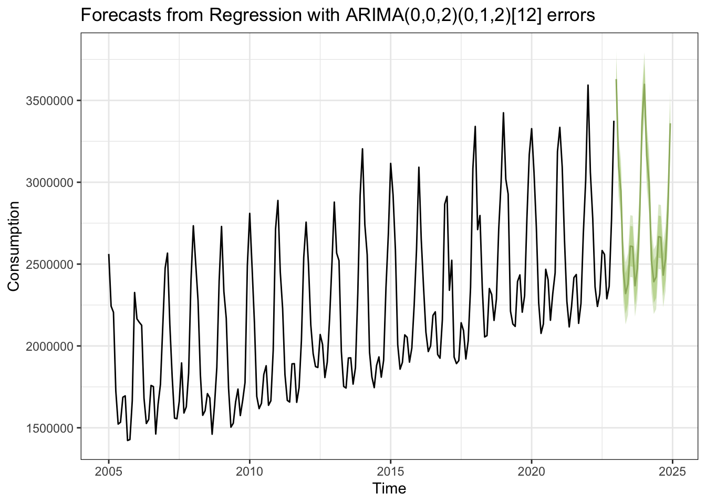
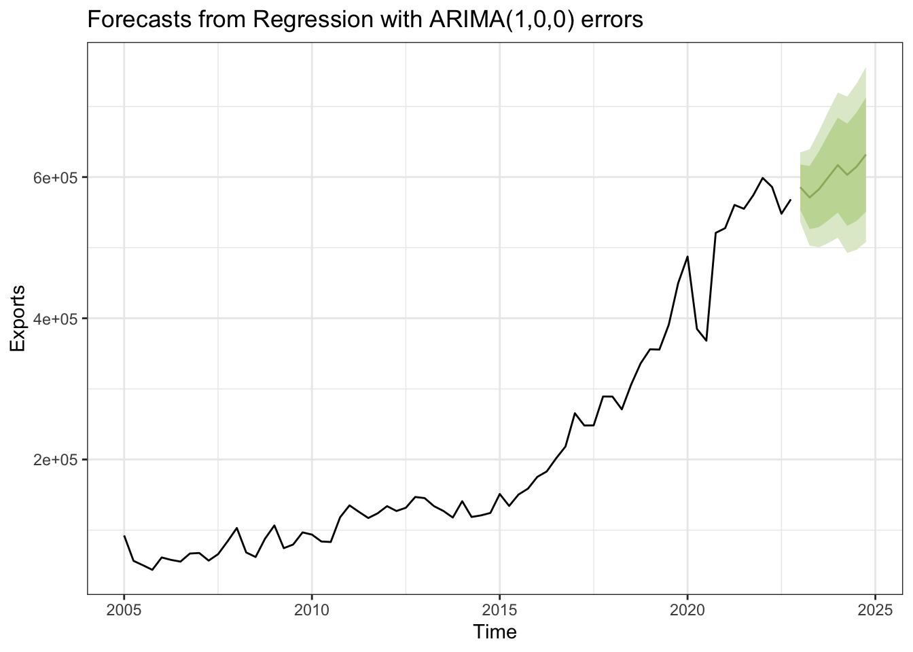

Multivariate TS Models (ARIMAX/SARIMAX/VAR)
This section delves into the use of ARIMAX, SARIMAX, and VAR modeling techniques for the time series datasets relevant to my project.
The ARIMAX (AutoRegressive Integrated Moving Average with eXogenous variables) and SARIMAX (Seasonal ARIMAX) models are particularly useful when you’re looking to predict the behavior of one primary variable based on its past values, while also considering the impact of other external variables. These models are invaluable for scenarios where external factors significantly drive changes in the primary variable, but the influence isn’t bidirectional.
On the other hand, VAR (Vector Autoregression) models are pivotal when analyzing systems where variables are interdependent. These models allow us to explore how each variable in the dataset influences others over time, providing a comprehensive view of the dynamic interactions within the data.
Literature Review
Macroeconomic Factors Affecting Natural Gas Export Management: The paper demonstrates that domestic consumption, exchange rates, and GDP per capita of the importing country significantly influence natural gas export volumes both in the short and long term. This suggests that these variables are critical predictors for modeling and forecasting the volume of natural gas exports
Low US Storage Levels Point to Winter Natural Gas Price Spike Risk: The article highlights how low gas storage levels significantly impact natural gas prices, suggesting that storage could be a critical dependent variable in models predicting these prices, especially during high-demand winter periods. This relationship also implies that storage levels could serve as a dependent variable in predicting natural gas demand, reflecting its role in balancing supply and demand seasonally.
Short-Term Energy Outlook Supplement: Market Drivers and Other Factors Affecting Natural Gas Prices: This report provides a detailed analysis of various factors influencing natural gas prices. The report’s emphasis on the direct impacts of consumption and production on natural gas pricing. The report’s discussion on macroeconomic trends affecting industrial activity and natural gas consumption, suggesting that broader economic conditions significantly impact natural gas demand and, consequently, prices.
Impacts of long-term temperature change and variability on electricity investments: This paper highlights how temperature increases significantly impact electric capacity and investment needs in the U.S. Analyzing climate and socioeconomic scenarios, it shows that higher temperatures boost electricity demand and capital investments, especially during peak times. This suggests that temperature is a crucial factor in predicting natural gas demand, as it is integral to electricity generation.
Drivers of the US CO2 emissions 1997–2013: This paper uses structural decomposition analysis (SDA) to identify the key factors influencing CO2 emissions in the United States. It reveals that increases in consumption drove emissions up during 1997-2007, while reductions in consumption and changes in production structures helped decrease emissions from 2007-2013. These findings highlights the importance of targeting consumption patterns and production structures in CO2 emissions management.
Datasets & Models
(SARIMAX) Consumption ~ Temperature + Production + Storage
I chose Temperature, Production, and Storage as exogenous variables in the SARIMAX model for predicting natural gas demand because Temperature directly influences consumption due to heating and cooling needs, varying with the seasons. Production levels impact market supply, which can affect consumption by altering availability and prices. Storage levels act as a buffer for supply fluctuations and have implications on consumption through their effect on market dynamics.
View Code
consumption<-read.csv("datasets/eda/Consumption.csv")
consumption$Date <- as.Date(consumption$Month, format = "%m/%d/%y")
consumption <- subset(consumption, select = -Month)
temperature<-read.csv("datasets/eda/temperature.csv")
temperature$Date <- as.Date(temperature$moonth, format = "%m/%d/%y")
temperature <- subset(temperature, select = c(Date,avg_temp))
names(temperature)[2] <- "temperature"
production<-read.csv("datasets/eda/Production.csv")
production$Date <- as.Date(production$Month, format = "%m/%d/%y")
production <- subset(production, select = -Month)
storage<-read.csv("datasets/eda/Storage.csv")
storage$Date <- as.Date(storage$Month, format = "%m/%d/%y")
storage <- subset(storage, select = -Month)
names(storage)[1] <- "storage"
demand <- consumption %>%
left_join(temperature, by = "Date") %>%
left_join(production, by = "Date") %>%
left_join(storage, by = "Date")
demand <- demand[, c(2, 1, 3:ncol(demand))]
demand_ts = ts(demand, start = 2005, end = c(2022,12), frequency =12 )
head_demand<-head(demand)
knitr::kable(head_demand, caption = "Natural Gas Demand in the US Dataset")| Date | Consumption | temperature | Production | storage |
|---|---|---|---|---|
| 2005-01-01 | 2561858 | 33.4 | 2035036 | 6199291 |
| 2005-02-01 | 2242986 | 37.9 | 1870546 | 5768939 |
| 2005-03-01 | 2205787 | 42.3 | 2080504 | 5484332 |
| 2005-04-01 | 1724877 | 52.3 | 1979474 | 5699060 |
| 2005-05-01 | 1522613 | 59.6 | 2010625 | 6075521 |
| 2005-06-01 | 1534122 | 69.2 | 1972975 | 6398738 |
(ARIMAX) Prices(Henry Hub) ~ GDP + Unemployment
I chose GDP and unemployment rates as exogenous variables for this analysis because they are key indicators of economic activity and health, which directly influence energy demand and pricing. Changes in GDP reflect shifts in industrial and consumer demand for energy, while unemployment rates can impact consumption patterns, both of which affect natural gas prices at Henry Hub.
View Code
price<-read.csv("datasets/eda/Henry_Hub_Natural_Gas_Spot_Price.csv")
price$Date <- as.Date(price$Month, format = "%m/%d/%y")
price <- subset(price, select = -Month)
names(price)[1] <- "price"
price <- price[c("Date", "price")]
# Convert Date to a quarterly period using lubridate
price <- price %>%
mutate(Date = floor_date(Date, "quarter"))
# Aggregate data by quarter
price <- price %>%
group_by(Date) %>%
summarize(
price = round(mean(price),2),
.groups = 'drop' # Drops the grouping structure after summarizing
)
gdp<-read.csv("datasets/eda/gdp.csv")
gdp$Date <- as.Date(gdp$Quarter, format = "%Y-%m-%d")
gdp <- subset(gdp, select = -Quarter)
names(gdp)[1]<-"gdp"
gdp <- gdp[c("Date", "gdp")]
unemp<-read.csv("datasets/eda/unemp.csv")
##unpivot
unemp <- unemp %>%
pivot_longer(
cols = Jan:Dec, #the range of columns to unpivot
names_to = "Month",
values_to = "Unemp"
)
unemp$Date <- make_date(year = unemp$Year, month = match(unemp$Month, month.abb), day = 1)
# reorder columns to place Date first and drop Year and Month as they are no longer needed
unemp <- unemp[, c("Date", "Unemp")]
unemp$Date <- as.Date(unemp$Date, format = "%Y-%m-%d")
# Convert Date to a quarterly period using lubridate
unemp <- unemp %>%
mutate(Date = floor_date(Date, "quarter"))
# Aggregate data by quarter
unemp <- unemp %>%
group_by(Date) %>%
summarize(
unemp = round(mean(Unemp),2),
.groups = 'drop' # Drops the grouping structure after summarizing
)
eco <- price %>%
left_join(gdp, by = "Date") %>%
left_join(unemp, by = "Date")
eco_ts = ts(eco, start = 2005, frequency =4 )
head_eco<-head(eco)
knitr::kable(head_eco, caption = "Natural Gas Henry Hub Prices and Macroeconomic Indicators in the US Dataset")| Date | price | gdp | unemp |
|---|---|---|---|
| 2005-01-01 | 6.42 | 12767.29 | 5.30 |
| 2005-04-01 | 6.94 | 12922.66 | 5.10 |
| 2005-07-01 | 9.64 | 13142.64 | 4.97 |
| 2005-10-01 | 12.26 | 13324.20 | 4.97 |
| 2006-01-01 | 7.71 | 13599.16 | 4.73 |
| 2006-04-01 | 6.54 | 13753.42 | 4.63 |
(ARIMAX) Exports ~ Domestic Consumption + Exchange Rate + GDP of of the importing country(Netherlands)
I chose domestic consumption for this analysis because it directly reflects the internal demand for natural gas within the U.S., influencing how much is available for export. The exchange rate affects the competitiveness of U.S. natural gas in global markets, with favorable rates potentially boosting exports by making them more cost-effective for foreign buyers. Additionally, the GDP of the importing country, the Netherlands in this case, was chosen because it indicates the economic health and energy demand of a key market, impacting the volume of natural gas they are likely to import from the U.S.
View Code
exports<-read.csv("datasets/eda/exports.csv")
exports$Date <- as.Date(exports$Month, format = "%Y-%m-%d")
exports <- subset(exports, select = -Month)
exports <- exports[c("Date", "Exports")]
# Filter rows where the year is greater than 2004
exports <- exports[as.integer(format(exports$Date, "%Y")) > 2004, ]
# Convert Date to a quarterly period using lubridate
exports <- exports %>%
mutate(Date = floor_date(Date, "quarter"))
# Aggregate data by quarter
exports <- exports %>%
group_by(Date) %>%
summarize(
exports = round(mean(Exports),2),
.groups = 'drop' # Drops the grouping structure after summarizing
)
consumption<-read.csv("datasets/eda/Consumption.csv")
consumption$Date <- as.Date(consumption$Month, format = "%m/%d/%y")
consumption <- subset(consumption, select = -Month)
consumption <- consumption[c("Date", "Consumption")]
# Convert Date to a quarterly period using lubridate
consumption <- consumption %>%
mutate(Date = floor_date(Date, "quarter"))
# Aggregate data by quarter
consumption <- consumption %>%
group_by(Date) %>%
summarize(
consumption = round(mean(Consumption),2),
.groups = 'drop' # Drops the grouping structure after summarizing
)
fx_rate<-read.csv("datasets/eda/exchange_rate.csv")
fx_rate$Date <- as.Date(fx_rate$Date, format = "%Y-%m-%d")
names(fx_rate)[2] <- "fx_rate"
gdp_nl<-read.csv("datasets/eda/gdp_int.csv")
gdp_nl$Date <- as.Date(gdp_nl$Date, format = "%m/%d/%y")
names(gdp_nl)[2] <- "gdp_nl"
export <- exports %>%
left_join(consumption, by = "Date") %>%
left_join(fx_rate, by = "Date") %>%
left_join(gdp_nl, by = "Date")
export_ts = ts(export, start = 2005, frequency =4 )
head_export<-head(export)
knitr::kable(head_export, caption = "US Exports of Natural Gas and the Influencing Factors Dataset")| Date | exports | consumption | fx_rate | gdp_nl |
|---|---|---|---|---|
| 2005-01-01 | 92397.00 | 2336877 | 105.2033 | 134841.1 |
| 2005-04-01 | 56429.67 | 1593871 | 103.9500 | 136587.9 |
| 2005-07-01 | 50286.33 | 1601402 | 102.4767 | 138671.4 |
| 2005-10-01 | 43753.67 | 1805996 | 101.5567 | 140509.7 |
| 2006-01-01 | 61266.67 | 2145338 | 100.7100 | 143090.4 |
| 2006-04-01 | 57815.33 | 1586060 | 102.1833 | 145172.7 |
(ARIMAX) CO2 emissions ~ Natural Gas Consumption + Natural Gas Production
I chose Natural Gas Consumption and Natural Gas Production as exogenous variables in the ARIMAX model for predicting CO2 emissions, because these variables are directly linked to emissions levels. Natural gas consumption is a primary source of CO2 emissions, particularly in power generation and industrial uses, making it a key variable for accurate emissions modeling. Similarly, the rate of natural gas production influences the availability and usage of natural gas, thereby affecting overall emissions.
View Code
co2_emissions<-read.csv("datasets/eda/co2_emissions.csv")
co2_emissions$Date <- as.Date(co2_emissions$Date, format = "%m/%d/%y")
co2_emissions <- subset(co2_emissions, select = c(Date,co2_value))
# Filter rows where the year is greater than 2004
co2_emissions <- co2_emissions[as.integer(format(co2_emissions$Date, "%Y")) > 2004, ]
# Filter rows where the year is less than 2023
co2_emissions <- co2_emissions[as.integer(format(co2_emissions$Date, "%Y"))<2023, ]
consumption<-read.csv("datasets/eda/Consumption.csv")
consumption$Date <- as.Date(consumption$Month, format = "%m/%d/%y")
consumption <- subset(consumption, select = -Month)
production<-read.csv("datasets/eda/Production.csv")
production$Date <- as.Date(production$Month, format = "%m/%d/%y")
production <- subset(production, select = -Month)
env_impact <- co2_emissions %>%
left_join(consumption, by = "Date") %>%
left_join(production, by = "Date")
env_impact_ts = ts(env_impact, start = 2005, end = c(2022,12), frequency =12 )
head_env_impact<-head(env_impact)
knitr::kable(head_env_impact, caption = "Natural Gas Environmental Impact in the US Dataset")| Date | co2_value | Consumption | Production |
|---|---|---|---|
| 2005-01-01 | 1200.931 | 2561858 | 2035036 |
| 2005-01-01 | 138.000 | 2561858 | 2035036 |
| 2005-02-01 | 120.689 | 2242986 | 1870546 |
| 2005-03-01 | 118.592 | 2205787 | 2080504 |
| 2005-04-01 | 92.529 | 1724877 | 1979474 |
| 2005-05-01 | 81.622 | 1522613 | 2010625 |
(VAR) Prices(Henry Hub) ~ Imports + Production
Prices at Henry Hub, imports, and production were chosen as endogenous variables for the VAR model to capture the interdependent dynamics within the natural gas market. Henry Hub prices are a benchmark for natural gas pricing and are influenced by changes in supply and demand, which are directly impacted by production levels and import volumes. By analyzing these variables together, the model can illustrate how fluctuations in production and imports directly affect prices, providing a comprehensive view of the supply-demand balance in the U.S. natural gas market.
View Code
price<-read.csv("datasets/eda/Henry_Hub_Natural_Gas_Spot_Price.csv")
price$Date <- as.Date(price$Month, format = "%m/%d/%y")
price <- subset(price, select = -Month)
names(price)[1] <- "price"
imports<-read.csv("datasets/eda/imports.csv")
imports$Date <- as.Date(imports$Month, format = "%Y-%m-%d")
imports <- subset(imports, select = -Month)
names(imports)[1] <- "imports"
imports <- imports[c("Date", "imports")]
# Filter rows where the year is greater than 2004
imports <- imports[as.integer(format(imports$Date, "%Y")) > 2004, ]
production<-read.csv("datasets/eda/Production.csv")
production$Date <- as.Date(production$Month, format = "%m/%d/%y")
production <- subset(production, select = -Month)
supply_dynamics <- price %>%
left_join(imports, by = "Date") %>%
left_join(production, by = "Date")
supply_dynamics <- supply_dynamics[, c(2, 1, 3:ncol(supply_dynamics))]
knitr::kable(head(supply_dynamics), caption = "Natural Gas Supply Dynamics in the US Dataset")| Date | price | imports | Production |
|---|---|---|---|
| 2005-01-01 | 6.15 | 405016 | 2035036 |
| 2005-02-01 | 6.14 | 356495 | 1870546 |
| 2005-03-01 | 6.96 | 379650 | 2080504 |
| 2005-04-01 | 7.16 | 326147 | 1979474 |
| 2005-05-01 | 6.47 | 333997 | 2010625 |
| 2005-06-01 | 7.18 | 321710 | 1972975 |
ARIMAX/SARIMAX Modeling
Time series plot
View Code
autoplot(demand_ts[,c(2:5)], facets=TRUE, color="#92c54b") +
xlab("Time") + ylab("") + theme_bw() +
ggtitle("Factors Affecting Consumption Variations")The graph seems to illustrate a clear seasonal pattern in natural gas consumption, which is likely correlated with temperature variations. This pattern typically shows higher consumption during the colder months when temperatures are low, indicating heating demand is driving usage. The production of natural gas appears to trend upward over time, suggesting increased capacity or efficiency in production methods. Interestingly, while there’s seasonality in consumption that aligns with temperature changes, production doesn’t show a similar seasonal dip but instead a steady or possibly growing trend over the years. Storage levels also exhibit seasonality, with peaks presumably during times of lower consumption when excess production can be stored, and troughs when storage is drawn down during periods of high consumption.
View Code
autoplot(eco_ts[,c(2:4)], facets=TRUE, color="#92c54b") +
xlab("Time") + ylab("")+ theme_bw() +
ggtitle("Macroeconomic Factors Affecting Natural Gas Prices")The graph shows an unexpected trend between natural gas prices, U.S. GDP, and unemployment. Despite steady economic growth indicated by rising GDP, natural gas prices rise initially but then decline, suggesting influences from factors like technological advances or energy policy changes. The sharp increase in unemployment in 2020 leads to a significant drop in prices, indicating decreased demand. However, as the economy recovers and unemployment falls, prices begin to recover, reflecting a rebound in demand for natural gas.
View Code
autoplot(export_ts[,c(2:5)], facets=TRUE, color="#92c54b") +
xlab("Time") + ylab("")+ theme_bw() +
ggtitle("Factors Affecting Variations in US Exports")The plot shows that the growth of U.S. natural gas exports alongside factors like domestic consumption, foreign exchange rates, and the GDP of the Netherlands. It shows a steady increase in exports, reflecting the U.S.’s growing role in global energy markets. Domestic consumption follows a consistent cyclical pattern, suggesting seasonal variability in demand which doesn’t appear to directly impact the rising trend in exports. The foreign exchange rate exhibits fluctuations which could influence international trade dynamics, potentially making U.S. gas more or less attractive to foreign buyers depending on the strength of the dollar. Lastly, the GDP of the Netherlands, a significant importer, shows a steady rise, indicating economic growth that could correlate with increased demand for U.S. natural gas, aligning with the increase in exports.
View Code
autoplot(env_impact_ts[,c(2:4)], facets=TRUE, color="#92c54b") +
xlab("Time") + ylab("")+ theme_bw() +
ggtitle("Factors Affecting CO2 Emission Variations")According to the graph CO2 emissions exhibit sharp, periodic spikes that could correlate with specific events or time periods—potentially seasonal changes in energy use. Natural gas consumption shows a fluctuating but consistent pattern, suggesting a regular, perhaps seasonal, variation—likely related to heating needs in winter and cooling in summer. Production, however, trends upward, indicating growing output over the years. Together, this plot shows consumption and production trends directly impact emission levels.
Automatic Model Fitting
View Code
xreg_demand <- cbind(temperature = demand_ts[, "temperature"],
Production = demand_ts[, "Production"],
storage = demand_ts[, "storage"] )
fit_demand <- auto.arima(demand_ts[, "Consumption"], xreg = xreg_demand)
summary(fit_demand)Series: demand_ts[, "Consumption"]
Regression with ARIMA(0,0,2)(0,1,2)[12] errors
Coefficients:
ma1 ma2 sma1 sma2 drift temperature Production
0.4825 0.2238 -0.723 -0.1183 2111.3781 -28006.454 0.2838
s.e. 0.0771 0.0638 0.081 0.0827 669.2816 2840.643 0.0732
storage
-0.0663
s.e. 0.0329
sigma^2 = 6.886e+09: log likelihood = -2602.93
AIC=5223.86 AICc=5224.78 BIC=5253.72
Training set error measures:
ME RMSE MAE MPE MAPE MASE
Training set -521.2747 79045.42 61595.38 -0.1426391 2.80638 0.526904
ACF1
Training set 0.003687805View Code
checkresiduals(fit_demand, theme = theme_bw())
Ljung-Box test
data: Residuals from Regression with ARIMA(0,0,2)(0,1,2)[12] errors
Q* = 28.821, df = 20, p-value = 0.09135
Model df: 4. Total lags used: 24Best model: ARIMA(0,0,2)(0,1,2)[12]
View Code
xreg_eco <- cbind(gdp = eco_ts[, "gdp"],
unemp = eco_ts[, "unemp"])
fit_eco <- auto.arima(eco_ts[, "price"], xreg = xreg_eco)
summary(fit_eco)Series: eco_ts[, "price"]
Regression with ARIMA(0,1,0)(0,0,2)[4] errors
Coefficients:
sma1 sma2 drift gdp unemp
-0.3273 -0.4984 -0.2165 1e-03 0.2079
s.e. 0.1632 0.2082 0.1129 7e-04 0.1730
sigma^2 = 1.141: log likelihood = -105.07
AIC=222.15 AICc=223.46 BIC=235.72
Training set error measures:
ME RMSE MAE MPE MAPE MASE
Training set -0.002765651 1.022808 0.7047353 -1.651351 15.3355 0.5172927
ACF1
Training set -0.03771922View Code
checkresiduals(fit_eco, theme = theme_bw())
Ljung-Box test
data: Residuals from Regression with ARIMA(0,1,0)(0,0,2)[4] errors
Q* = 13.842, df = 6, p-value = 0.03145
Model df: 2. Total lags used: 8Best model: ARIMA(0,1,0)(0,0,2)[4]
View Code
xreg_export <- cbind(consumption = export_ts[, "consumption"],
fx_rate = export_ts[, "fx_rate"],
gdp_nl = export_ts[, "gdp_nl"] )
fit_export <- auto.arima(export_ts[, "exports"], xreg = xreg_export)
summary(fit_export)Series: export_ts[, "exports"]
Regression with ARIMA(1,0,0) errors
Coefficients:
ar1 consumption fx_rate gdp_nl
0.9682 0.0256 -2805.966 2.7013
s.e. 0.0280 0.0061 1423.789 0.7156
sigma^2 = 618599493: log likelihood = -830.24
AIC=1670.48 AICc=1671.38 BIC=1681.86
Training set error measures:
ME RMSE MAE MPE MAPE MASE ACF1
Training set 631.4008 24170.91 15116.9 -3.351663 9.746448 0.4376682 -0.1334921View Code
checkresiduals(fit_export, theme = theme_bw())
Ljung-Box test
data: Residuals from Regression with ARIMA(1,0,0) errors
Q* = 10.79, df = 7, p-value = 0.1481
Model df: 1. Total lags used: 8Best model: ARIMA(1,0,0)
View Code
xreg_env_impact <- cbind(Consumption = env_impact_ts[, "Consumption"],
Production = env_impact_ts[, "Production"] )
fit_env_impact <- auto.arima(env_impact_ts[, "co2_value"], xreg = xreg_env_impact)
summary(fit_env_impact)Series: env_impact_ts[, "co2_value"]
Regression with ARIMA(0,0,1)(0,0,2)[12] errors
Coefficients:
ma1 sma1 sma2 intercept Consumption Production
-0.6175 -0.3055 -0.5099 -248.4645 4e-04 -2e-04
s.e. 0.1470 0.1103 0.0763 6.0078 1e-04 0e+00
sigma^2 = 55394: log likelihood = -1489.81
AIC=2993.62 AICc=2994.15 BIC=3017.24
Training set error measures:
ME RMSE MAE MPE MAPE MASE ACF1
Training set 5.983612 232.0674 162.3454 -19.40169 99.99742 0.7961153 0.1138366View Code
checkresiduals(fit_env_impact, theme = theme_bw())
Ljung-Box test
data: Residuals from Regression with ARIMA(0,0,1)(0,0,2)[12] errors
Q* = 246.45, df = 21, p-value < 2.2e-16
Model df: 3. Total lags used: 24Best model: ARIMA(0,0,1)(0,0,2)[12]
Manual Model Fitting
View Code
demand$Consumption<-ts(demand$Consumption,star=decimal_date(as.Date("2005-01-01",format = "%Y-%m-%d")),frequency = 12)
demand$Production<-ts(demand$Production,star=decimal_date(as.Date("2005-01-01",format = "%Y-%m-%d")),frequency = 12)
demand$temperature<-ts(demand$temperature,star=decimal_date(as.Date("2005-01-01",format = "%Y-%m-%d")),frequency = 12)
demand$storage<-ts(demand$storage,star=decimal_date(as.Date("2005-01-01",format = "%Y-%m-%d")),frequency = 12)
############# First fit the linear model##########
fit_demand.reg <- lm(Consumption ~ Production+temperature+storage, data=demand)
summary(fit_demand.reg)
Call:
lm(formula = Consumption ~ Production + temperature + storage,
data = demand)
Residuals:
Min 1Q Median 3Q Max
-423377 -179561 -8729 202940 528191
Coefficients:
Estimate Std. Error t value Pr(>|t|)
(Intercept) 2.289e+06 1.523e+05 15.031 <2e-16 ***
Production 5.123e-01 2.859e-02 17.918 <2e-16 ***
temperature -2.041e+04 1.054e+03 -19.366 <2e-16 ***
storage -4.938e-02 2.122e-02 -2.327 0.0209 *
---
Signif. codes: 0 '***' 0.001 '**' 0.01 '*' 0.05 '.' 0.1 ' ' 1
Residual standard error: 225800 on 212 degrees of freedom
Multiple R-squared: 0.7787, Adjusted R-squared: 0.7756
F-statistic: 248.6 on 3 and 212 DF, p-value: < 2.2e-16View Code
checkresiduals(fit_demand.reg, theme = theme_bw())
Breusch-Godfrey test for serial correlation of order up to 10
data: Residuals
LM test = 172.11, df = 10, p-value < 2.2e-16The ACF plot suggests that there’s autocorrelation at certain lags that the model hasn’t accounted for.Residuals Distribution resemble a normal distribution, which is a good sign of model fit.
View Code
eco$price<-ts(eco$price,star=decimal_date(as.Date("2005-01-01",format = "%Y-%m-%d")),frequency = 4)
eco$gdp<-ts(eco$gdp,star=decimal_date(as.Date("2005-01-01",format = "%Y-%m-%d")),frequency = 4)
eco$unemp<-ts(eco$unemp,star=decimal_date(as.Date("2005-01-01",format = "%Y-%m-%d")),frequency = 4)
############# First fit the linear model##########
fit_eco.reg <- lm(price ~ gdp+unemp, data=eco)
summary(fit_eco.reg)
Call:
lm(formula = price ~ gdp + unemp, data = eco)
Residuals:
Min 1Q Median 3Q Max
-2.7756 -1.5938 -0.1842 0.7598 5.6088
Coefficients:
Estimate Std. Error t value Pr(>|t|)
(Intercept) 1.385e+01 1.672e+00 8.285 6.02e-12 ***
gdp -3.668e-04 6.976e-05 -5.259 1.54e-06 ***
unemp -4.647e-01 1.157e-01 -4.017 0.000148 ***
---
Signif. codes: 0 '***' 0.001 '**' 0.01 '*' 0.05 '.' 0.1 ' ' 1
Residual standard error: 1.907 on 69 degrees of freedom
Multiple R-squared: 0.3164, Adjusted R-squared: 0.2966
F-statistic: 15.97 on 2 and 69 DF, p-value: 2.001e-06View Code
checkresiduals(fit_eco.reg, theme = theme_bw())
Breusch-Godfrey test for serial correlation of order up to 10
data: Residuals
LM test = 49.407, df = 10, p-value = 3.43e-07The ACF plot does not display significant autocorrelation in the residuals, this generally indicates that the residuals are random, which is a sign of a good fit. The histogram shows some deviations from normality, especially with a skew towards the right.
View Code
export$consumption<-ts(export$consumption,star=decimal_date(as.Date("2005-01-01",format = "%Y-%m-%d")),frequency = 4)
export$fx_rate<-ts(export$fx_rate,star=decimal_date(as.Date("2005-01-01",format = "%Y-%m-%d")),frequency = 4)
export$gdp_nl<-ts(export$gdp_nl,star=decimal_date(as.Date("2005-01-01",format = "%Y-%m-%d")),frequency = 4)
############# First fit the linear model##########
fit_export.reg <- lm(exports ~ consumption+fx_rate+gdp_nl, data=export)
summary(fit_export.reg)
Call:
lm(formula = exports ~ consumption + fx_rate + gdp_nl, data = export)
Residuals:
Min 1Q Median 3Q Max
-114272 -29193 -5976 19885 115631
Coefficients:
Estimate Std. Error t value Pr(>|t|)
(Intercept) -1.476e+06 2.234e+05 -6.609 7.14e-09 ***
consumption 4.085e-02 1.622e-02 2.519 0.0141 *
fx_rate 5.554e+03 2.097e+03 2.648 0.0101 *
gdp_nl 5.956e+00 2.619e-01 22.742 < 2e-16 ***
---
Signif. codes: 0 '***' 0.001 '**' 0.01 '*' 0.05 '.' 0.1 ' ' 1
Residual standard error: 45270 on 68 degrees of freedom
Multiple R-squared: 0.9298, Adjusted R-squared: 0.9267
F-statistic: 300.1 on 3 and 68 DF, p-value: < 2.2e-16View Code
checkresiduals(fit_export.reg, theme = theme_bw())
Breusch-Godfrey test for serial correlation of order up to 10
data: Residuals
LM test = 47.27, df = 10, p-value = 8.432e-07The ACF plot indicates significant autocorrelations at multiple lags. This is a strong indication that the model has not fully captured the autocorrelative structure of the data, and there may be additional lags or other dependencies that should be incorporated into the model. The shape of residual plot is also not perfectly symmetrical, indicating skewness in the distribution of residuals. Overall, the residuals exhibit some problematic features such as trends, heavy tails, skewness, and significant autocorrelation, all of which suggest that the current model could be improved to better fit the underlying dynamics of the data.
View Code
env_impact$co2_value<-ts(env_impact$co2_value,star=decimal_date(as.Date("2005-01-01",format = "%Y-%m-%d")),frequency = 12)
env_impact$Consumption<-ts(env_impact$Consumption,star=decimal_date(as.Date("2005-01-01",format = "%Y-%m-%d")),frequency = 12)
env_impact$Production<-ts(env_impact$Production,star=decimal_date(as.Date("2005-01-01",format = "%Y-%m-%d")),frequency = 12)
############# First fit the linear model##########
fit_env_impact.reg <- lm(co2_value ~ Consumption+Production, data=env_impact)
summary(fit_env_impact.reg)
Call:
lm(formula = co2_value ~ Consumption + Production, data = env_impact)
Residuals:
Min 1Q Median 3Q Max
-446.15 -164.77 -5.79 50.29 1172.80
Coefficients:
Estimate Std. Error t value Pr(>|t|)
(Intercept) -3.106e+02 1.046e+02 -2.969 0.003305 **
Consumption 4.164e-04 4.521e-05 9.209 < 2e-16 ***
Production -1.565e-04 4.225e-05 -3.703 0.000267 ***
---
Signif. codes: 0 '***' 0.001 '**' 0.01 '*' 0.05 '.' 0.1 ' ' 1
Residual standard error: 295.9 on 231 degrees of freedom
Multiple R-squared: 0.274, Adjusted R-squared: 0.2678
F-statistic: 43.6 on 2 and 231 DF, p-value: < 2.2e-16View Code
checkresiduals(fit_env_impact.reg, theme = theme_bw())
Breusch-Godfrey test for serial correlation of order up to 10
data: Residuals
LM test = 90.652, df = 10, p-value = 3.977e-15ACF Plot suggests that there is little autocorrelation in the residuals, indicating that the model has accounted for the time series autocorrelation effectively.For the distribution of Residuals plot, while there’s a noticeable peak that aligns with the normal distribution, the long tails suggest the presence of outliers or extreme values that the model did not predict accurately.
Fitting residuals
View Code
res.fit_demand<-ts(residuals(fit_demand.reg),star=decimal_date(as.Date("2005-01-01",format = "%Y-%m-%d")),frequency = 12)
############## Then look at the residuals ############
acf(res.fit_demand,main="ACF Plot")View Code
Pacf(res.fit_demand,main="PACF Plot")View Code
acf(diff(res.fit_demand, lag = 12),main="ACF Plot: Seasonality")View Code
Pacf(diff(res.fit_demand, lag = 12),main="PACF Plot: Seasonality")View Code
res.fit_eco<-ts(residuals(fit_eco.reg),star=decimal_date(as.Date("2005-01-01",format = "%Y-%m-%d")),frequency = 4)
############## Then look at the residuals ############
acf(res.fit_eco,main="ACF Plot")
View Code
Pacf(res.fit_eco,main="PACF Plot")View Code
res.fit_export<-ts(residuals(fit_export.reg),star=decimal_date(as.Date("2005-01-01",format = "%Y-%m-%d")),frequency = 4)
############## Then look at the residuals ############
acf(res.fit_export,main="ACF Plot")View Code
Pacf(res.fit_export,main="PACF Plot")View Code
res.fit_env_impact<-ts(residuals(fit_env_impact.reg),star=decimal_date(as.Date("2005-01-01",format = "%Y-%m-%d")),frequency = 12)
############## Then look at the residuals ############
acf(res.fit_env_impact,main="ACF Plot")View Code
Pacf(res.fit_env_impact,main="PACF Plot")Finding Model Parameters
p = 1,2,3,4
q = 1,2,3,4
P = 1
Q = 1,2,3
D = 1
d = 0
View Code
SARIMA.c=function(p1,p2,q1,q2,P1,P2,Q1,Q2,d1,d2,data){
temp=c()
D=1
s=12
i=1
temp= data.frame()
ls=matrix(rep(NA,9*150),nrow=150)
for (p in p1:p2)
{
for(q in q1:q2)
{
for(P in P1:P2)
{
for(Q in Q1:Q2)
{
for(d in d1:d2)
{
if(p+d+q+P+D+Q<=10)
{
model<- Arima(data,order=c(p-1,d,q-1),seasonal=c(P-1,D,Q-1),method="ML")
ls[i,]= c(p-1,d,q-1,P-1,D,Q-1,model$aic,model$bic,model$aicc)
i=i+1
}
}
}
}
}
}
temp= as.data.frame(ls)
names(temp)= c("p","d","q","P","D","Q","AIC","BIC","AICc")
temp
}
output=SARIMA.c(p1=1,p2=4,q1=1,q2=4,P1=1,P2=1,Q1=1,Q2=3,d1=0,d2=0,data=residuals(fit_demand.reg))
output[which.min(output$AIC),] p d q P D Q AIC BIC AICc
38 3 0 2 0 1 0 5575.973 5599.6 5576.511View Code
output[which.min(output$BIC),] p d q P D Q AIC BIC AICc
38 3 0 2 0 1 0 5575.973 5599.6 5576.511View Code
output[which.min(output$AICc),] p d q P D Q AIC BIC AICc
38 3 0 2 0 1 0 5575.973 5599.6 5576.511Model 1 (Best Model) : ARIMA(3,0,2)(0,1,0)[12]
Model 2 (Auto Arima): ARIMA(0,0,2)(0,1,2)[12]
p = 1
q = 1,2,3,4
d = 0,1
View Code
ARIMA.c=function(p1,p2,q1,q2,data){
temp=c()
i=1
temp= data.frame()
ls=matrix(rep(NA,6*30),nrow=30)
for (p in p1:p2)#
{
for(q in q1:q2)#
{
for(d in 0:1)
{
if(p+d+q<=8)
{
model<- Arima(data,order=c(p,d,q))
ls[i,]= c(p,d,q,model$aic,model$bic,model$aicc)
i=i+1
#print(i)
}
}
}
}
temp= as.data.frame(ls)
names(temp)= c("p","d","q","AIC","BIC","AICc")
temp
}
output <- ARIMA.c(0,1,0,4,data=residuals(fit_eco.reg))
output[which.min(output$AIC),] p d q AIC BIC AICc
8 0 1 3 227.575 236.6257 228.1811View Code
output[which.min(output$BIC),] p d q AIC BIC AICc
2 0 1 0 232.012 234.2747 232.07View Code
output[which.min(output$AICc),] p d q AIC BIC AICc
8 0 1 3 227.575 236.6257 228.1811Model 1 (Best Model) : ARIMA(0,1,3)
Model 2 (Second Best Model) : ARIMA(0,1,0)
Model 3 (Auto Arima): ARIMA(0,1,0)(0,0,2)[4]
Although Auto Arima have seasonal components, I opted for an ARIMA model over SARIMA based on manual analysis, which indicated that the seasonal components (P=0, D=0, Q=0) were unnecessary. This simpler ARIMA model aligns with the principle of parsimony, avoiding overfitting while adequately modeling the data without the inclusion of statistically insignificant seasonal terms.
p = 1
q = 1,2,3,4
d = 0,1
View Code
ARIMA.c=function(p1,p2,q1,q2,data){
temp=c()
i=1
temp= data.frame()
ls=matrix(rep(NA,6*30),nrow=30)
for (p in p1:p2)#
{
for(q in q1:q2)#
{
for(d in 0:1)
{
if(p+d+q<=8)
{
model<- Arima(data,order=c(p,d,q))
ls[i,]= c(p,d,q,model$aic,model$bic,model$aicc)
i=i+1
#print(i)
}
}
}
}
temp= as.data.frame(ls)
names(temp)= c("p","d","q","AIC","BIC","AICc")
temp
}
output <- ARIMA.c(0,1,0,4,data=residuals(fit_export.reg))
output[which.min(output$AIC),] p d q AIC BIC AICc
14 1 1 1 1662.293 1669.081 1662.651View Code
output[which.min(output$BIC),] p d q AIC BIC AICc
12 1 1 0 1664.272 1668.798 1664.449View Code
output[which.min(output$AICc),] p d q AIC BIC AICc
14 1 1 1 1662.293 1669.081 1662.651Model 1 (Best Model) : ARIMA(1,1,1)
Model 2 (Second Best Model) : ARIMA(1,1,0)
Model 3 (Auto Arima): ARIMA(1,0,0)
p = 1,2,3
q = 1
d = 0,1
View Code
ARIMA.c=function(p1,p2,q1,q2,data){
temp=c()
i=1
temp= data.frame()
ls=matrix(rep(NA,6*30),nrow=30)
for (p in p1:p2)#
{
for(q in q1:q2)#
{
for(d in 0:1)
{
if(p+d+q<=8)
{
model<- Arima(data,order=c(p,d,q))
ls[i,]= c(p,d,q,model$aic,model$bic,model$aicc)
i=i+1
#print(i)
}
}
}
}
temp= as.data.frame(ls)
names(temp)= c("p","d","q","AIC","BIC","AICc")
temp
}
output <- ARIMA.c(1,3,1,1,data=residuals(fit_env_impact.reg))
output[which.min(output$AIC),] p d q AIC BIC AICc
3 2 0 1 3253.174 3270.45 3253.437View Code
output[which.min(output$BIC),] p d q AIC BIC AICc
1 1 0 1 3253.988 3267.809 3254.162View Code
output[which.min(output$AICc),] p d q AIC BIC AICc
3 2 0 1 3253.174 3270.45 3253.437Model 1 (Best Model) : ARIMA(2,0,1)
Model 2 (Second Best Model) : ARIMA(1,0,1)
Model 3 (Auto Arima): ARIMA(0,0,1)(0,0,2)[12]
Although Auto Arima have seasonal components, I opted for an ARIMA model over SARIMA based on manual analysis, which indicated that the seasonal components (P=0, D=0, Q=0) were unnecessary. This simpler ARIMA model aligns with the principle of parsimony, avoiding overfitting while adequately modeling the data without the inclusion of statistically insignificant seasonal terms.
Model Diagnostics
View Code
model_output_demand1 <- capture.output(sarima(res.fit_demand, 3,0,2,0,1,0,12)) View Code
cat(model_output_demand1[98:109], model_output_demand1[length(model_output_demand1)], sep = "\n")Coefficients:
Estimate SE t.value p.value
ar1 1.3989 0.0668 20.9360 0.0000
ar2 -1.2696 0.0804 -15.7986 0.0000
ar3 0.3892 0.0668 5.8256 0.0000
ma1 -1.0461 0.0267 -39.1784 0.0000
ma2 1.0000 0.0465 21.4826 0.0000
constant -48.3397 1169.8796 -0.0413 0.9671
sigma^2 estimated as 10343181207 on 198 degrees of freedom
AIC = 25.99005 AICc = 25.99214 BIC = 26.10391
View Code
model_output_demand2 <- capture.output(sarima(res.fit_demand, 0,0,2,0,1,2,12)) View Code
cat(model_output_demand2[28:38], model_output_demand2[length(model_output_demand2)], sep = "\n")Coefficients:
Estimate SE t.value p.value
ma1 0.4491 0.0717 6.2601 0.0000
ma2 0.2045 0.0598 3.4195 0.0008
sma1 -0.6976 0.0849 -8.2168 0.0000
sma2 -0.1778 0.0850 -2.0933 0.0376
constant 147.5125 200.8884 0.7343 0.4636
sigma^2 estimated as 7248694815 on 199 degrees of freedom
AIC = 25.67953 AICc = 25.68102 BIC = 25.77712
The ACF plot reveals that most autocorrelation values are indeed within the confidence interval, indicating a good fit for both the models. The Q-Q plot suggest that the residuals are normally distributed for both the models.From the Ljung-Box Test, the p-values for model 2 are typically above 0.05 suggesting that the residuals are random, which is desirable in a good model fit. On comparing AIC, AICc, model 2 has lower values indicating a better fit.
View Code
model_output_eco1 <- capture.output(sarima(res.fit_eco, 0,1,3)) View Code
cat(model_output_eco1[26:35], model_output_eco1[length(model_output_eco1)], sep = "\n")Coefficients:
Estimate SE t.value p.value
ma1 -0.0127 0.1180 -0.1077 0.9145
ma2 -0.3783 0.1036 -3.6520 0.0005
ma3 -0.1599 0.1054 -1.5164 0.1341
constant 0.0239 0.0636 0.3760 0.7081
sigma^2 estimated as 1.279842 on 67 degrees of freedom
AIC = 3.231425 AICc = 3.239961 BIC = 3.390769
View Code
model_output_eco2 <- capture.output(sarima(res.fit_eco, 0,1,0)) View Code
cat(model_output_eco2[10:17], model_output_eco2[length(model_output_eco2)], sep = "\n")
Coefficients:
Estimate SE t.value p.value
constant 0.0469 0.145 0.3235 0.7473
sigma^2 estimated as 1.492206 on 70 degrees of freedom
AIC = 3.294471 AICc = 3.295287 BIC = 3.358208
View Code
model_output_eco3 <- capture.output(sarima(res.fit_eco, 0,1,0,0,0,2,4)) View Code
cat(model_output_eco3[25:34], model_output_eco3[length(model_output_eco3)], sep = "\n")Coefficients:
Estimate SE t.value p.value
sma1 -0.2987 0.1580 -1.8906 0.0629
sma2 -0.1484 0.1663 -0.8923 0.3754
constant 0.0241 0.0837 0.2876 0.7746
sigma^2 estimated as 1.392162 on 68 degrees of freedom
AIC = 3.291319 AICc = 3.296364 BIC = 3.418794
The ACF plot reveals that most autocorrelation values are indeed within the confidence interval, indicating a good fit for all the models. The Q-Q plot suggest that the residuals are normally distributed for all the models.From the Ljung-Box Test, the p-values for model 1 are typically above 0.05 suggesting that the residuals are random, which is desirable in a good model fit. On comparing AIC, AICc, model 1 has lower values indicating a better fit.
View Code
model_output_export1 <- capture.output(sarima(res.fit_export, 1,1,1)) View Code
cat(model_output_export1[152:161], model_output_export1[length(model_output_export1)], sep = "\n")Coefficients:
Estimate SE t.value p.value
ar1 -0.9703 0.0593 -16.3552 0.0000
ma1 0.8652 0.1209 7.1575 0.0000
constant -2972.9302 3131.5295 -0.9494 0.3458
sigma^2 estimated as 776009007 on 68 degrees of freedom
AIC = 23.42813 AICc = 23.43317 BIC = 23.5556
View Code
model_output_export2 <- capture.output(sarima(res.fit_export, 1,1,0)) View Code
cat(model_output_export2[20:28], model_output_export2[length(model_output_export2)], sep = "\n")Coefficients:
Estimate SE t.value p.value
ar1 -0.2856 0.1138 -2.5099 0.0144
constant -2695.6108 2659.9601 -1.0134 0.3144
sigma^2 estimated as 824886684 on 69 degrees of freedom
AIC = 23.45434 AICc = 23.45682 BIC = 23.54995
View Code
model_output_export3 <- capture.output(sarima(res.fit_export, 1,0,0)) View Code
cat(model_output_export3[27:35], model_output_export3[length(model_output_export3)], sep = "\n")Coefficients:
Estimate SE t.value p.value
ar1 0.7996 0.0804 9.9421 0.0000
xmean -1456.9356 16169.8092 -0.0901 0.9285
sigma^2 estimated as 838187240 on 70 degrees of freedom
AIC = 23.48213 AICc = 23.48455 BIC = 23.57699
The ACF plot reveals that most autocorrelation values are indeed within the confidence interval, indicating a good fit for all the models. The Q-Q plot suggest that the residuals are normally distributed for all the models.From the Ljung-Box Test, the p-values for model 1 are typically above 0.05 suggesting that the residuals are random, which is desirable in a good model fit. On comparing AIC, AICc, model 1 has lower values indicating a better fit.
View Code
model_output_env_impact1 <- capture.output(sarima(res.fit_env_impact, 2,0,1)) View Code
cat(model_output_env_impact1[26:37], model_output_env_impact1[length(model_output_env_impact1)], sep = "\n")
Coefficients:
Estimate SE t.value p.value
ar1 0.1754 0.0847 2.0719 0.0394
ar2 -0.1298 0.0764 -1.6981 0.0908
ma1 -0.7776 0.0592 -13.1299 0.0000
xmean 0.0348 3.8214 0.0091 0.9927
sigma^2 estimated as 60969.9 on 230 degrees of freedom
AIC = 13.90245 AICc = 13.9032 BIC = 13.97628
View Code
model_output_env_impact2 <- capture.output(sarima(res.fit_env_impact, 1,0,1)) View Code
cat(model_output_env_impact2[29:37], model_output_env_impact2[length(model_output_env_impact2)], sep = "\n")Coefficients:
Estimate SE t.value p.value
ar1 0.2019 0.0801 2.5206 0.0124
ma1 -0.8249 0.0416 -19.8089 0.0000
xmean -0.0189 3.6342 -0.0052 0.9958
sigma^2 estimated as 61720.43 on 231 degrees of freedom
AIC = 13.90593 AICc = 13.90638 BIC = 13.965
View Code
model_output_env_impact3 <- capture.output(sarima(res.fit_env_impact, 0,0,1,0,0,2,12)) View Code
cat(model_output_env_impact3[38:47], model_output_env_impact3[length(model_output_env_impact3)], sep = "\n")Coefficients:
Estimate SE t.value p.value
ma1 -0.5051 0.1220 -4.1419 0.0000
sma1 -0.3161 0.1040 -3.0396 0.0026
sma2 -0.4309 0.0694 -6.2139 0.0000
xmean -1.6697 2.6574 -0.6283 0.5304
sigma^2 estimated as 56381.74 on 230 degrees of freedom
AIC = 13.86174 AICc = 13.86249 BIC = 13.93557
The ACF plot reveals that most autocorrelation values are indeed within the confidence interval, indicating a good fit for all the models. The Q-Q plot suggest that the residuals are normally distributed for model 3.From the Ljung-Box Test, the p-values for model 1 and 2 are typically above 0.05 suggesting that the residuals are random, which is desirable in a good model fit. On comparing AIC, AICc, model 3 has lower values indicating a better fit.
Cross Validation
Model 1 (Best Model) : ARIMA(3,0,2)(0,1,0)[12]
Model 2 (Auto Arima): ARIMA(0,0,2)(0,1,2)[12]
View Code
x=res.fit_demand
set.seed(123)
k <- 124# first training set length
n <- length(x)
#n-k=168; 168/12=14; k=144
# matrix(NA,(n-k)/4,4)
res1 <- matrix(NA,(n-k)/4,12)
res2 <- matrix(NA,(n-k)/4,12)
mae1 <- matrix(NA, (n-k)/4,12)
mae2 <- matrix(NA,(n-k)/4,12)
st <- tsp(x)[1]+(k-1)/12
for(i in 1:(n-k)/12)
{
#xtrain <- window(a10, start=st+(i-k+1)/4, end=st+i/4)
xtrain <- window(x, end=st + i-1)
xtest <- window(x, start=st + (i-1) + 1/12, end=st + i)
fit <- Arima(xtrain, order=c(3,0,2), seasonal=list(order=c(0,1,0), period=12),
include.drift=TRUE, method="CSS")
fcast <- forecast(fit, h=12)
fit2 <-Arima(xtrain, order=c(0,0,2), seasonal=list(order=c(0,1,2), period=12),
include.drift=TRUE, method="CSS")
fcast2 <- forecast(fit2, h=12)
mae1[i,] <- abs(fcast$mean-xtest)
mae2[i,] <- abs(fcast2$mean-xtest)
####### to calculate RMSE ##########
res1[i,] <- (fcast$mean-xtest)^2
res2[i,] <- (fcast2$mean-xtest)^2
}
plot(1:12, colMeans(mae1,na.rm=TRUE), type="l", col=2, xlab="horizon", ylab="MAE")
lines(1:12, colMeans(mae2,na.rm=TRUE), type="l",col=3)
legend("topright",legend=c("Fit1:SARIMA(3,0,2)x(0,1,0)","Fit2:SARIMA(0,0,2)x(0,1,2)"),col=2:4,lty=1)View Code
########### RMSE ############
rmse1 =sqrt(colMeans(res1,na.rm=TRUE))
rmse2=sqrt(colMeans(res2,na.rm=TRUE))
plot(1:12, rmse1, type="l", col=2, xlab="horizon", ylab="RMSE")
lines(1:12, rmse2, type="l",col=3)
legend("topright",legend=c("Fit1:SARIMA(3,0,2)x(0,1,0)","Fit2:SARIMA(0,0,2)x(0,1,2)"),col=2:4,lty=1)Fit2:SARIMA(0,0,2)x(0,1,2) is better as it has lower MSE and RMSE.
View Code
x=res.fit_eco
set.seed(123)
k <- 51# first training set length
n <- length(x)
#n-k=168; 168/12=14; k=144
# matrix(NA,(n-k)/4,4)
res1 <- matrix(NA,(n-k)/4,4)
res2 <- matrix(NA,(n-k)/4,4)
res3 <- matrix(NA,(n-k)/4,4)
mae1 <- matrix(NA, (n-k)/4,4)
mae2 <- matrix(NA,(n-k)/4,4)
mae3 <- matrix(NA,(n-k)/4,4)
st <- tsp(x)[1]+(k-1)/4
for(i in 1:(n-k)/4)
{
#xtrain <- window(a10, start=st+(i-k+1)/4, end=st+i/4)
xtrain <- window(x, end=st + i-1)
xtest <- window(x, start=st + (i-1) + 1/4, end=st + i)
fit <- Arima(xtrain, order=c(0,1,3),include.drift=TRUE)
fcast <- forecast(fit, h=4)
fit2 <-Arima(xtrain, order=c(0,1,0),include.drift=TRUE)
fcast2 <- forecast(fit2, h=4)
fit3 <- Arima(xtrain, order=c(0,1,0), seasonal=list(order=c(0,0,2), period=4),
include.drift=TRUE, method="CSS")
fcast3 <- forecast(fit3, h=4)
mae1[i,] <- abs(fcast$mean-xtest)
mae2[i,] <- abs(fcast2$mean-xtest)
mae3[i,] <- abs(fcast3$mean-xtest)
####### to calculate RMSE ##########
res1[i,] <- (fcast$mean-xtest)^2
res2[i,] <- (fcast2$mean-xtest)^2
res3[i,] <- (fcast3$mean-xtest)^2
}
plot(1:4, colMeans(mae1,na.rm=TRUE), type="l", col=2, xlab="horizon", ylab="MAE")
lines(1:4, colMeans(mae2,na.rm=TRUE), type="l",col=3)
lines(1:4, colMeans(mae3,na.rm=TRUE), type="l",col=4)
legend("topright",legend=c("Fit1:ARIMA(0,1,3)","Fit2:ARIMA(0,1,0)","Fit3:ARIMA(0,1,0)(0,0,2)"),col=2:5,lty=1)
View Code
########### RMSE ############
rmse1 =sqrt(colMeans(res1,na.rm=TRUE))
rmse2=sqrt(colMeans(res2,na.rm=TRUE))
rmse3=sqrt(colMeans(res3,na.rm=TRUE))
plot(1:4, rmse1, type="l", col=2, xlab="horizon", ylab="RMSE")
lines(1:4, rmse2, type="l",col=3)
lines(1:4, rmse3, type="l",col=4)
legend("topright",legend=c("Fit1:ARIMA(0,1,3)","Fit2:ARIMA(0,1,0)","Fit3:ARIMA(0,1,0)(0,0,2)"),col=2:5,lty=1)Fit2:ARIMA(0,1,0) is better as it has overall lower MSE and RMSE.
View Code
x=res.fit_export
set.seed(123)
k <- 51# first training set length
n <- length(x)
#n-k=168; 168/12=14; k=144
# matrix(NA,(n-k)/4,4)
res1 <- matrix(NA,(n-k)/4,4)
res2 <- matrix(NA,(n-k)/4,4)
res3 <- matrix(NA,(n-k)/4,4)
mae1 <- matrix(NA, (n-k)/4,4)
mae2 <- matrix(NA,(n-k)/4,4)
mae3 <- matrix(NA,(n-k)/4,4)
st <- tsp(x)[1]+(k-1)/4
for(i in 1:(n-k)/4)
{
#xtrain <- window(a10, start=st+(i-k+1)/4, end=st+i/4)
xtrain <- window(x, end=st + i-1)
xtest <- window(x, start=st + (i-1) + 1/4, end=st + i)
fit <- Arima(xtrain, order=c(1,1,1),include.drift=TRUE)
fcast <- forecast(fit, h=4)
fit2 <-Arima(xtrain, order=c(1,1,0),include.drift=TRUE)
fcast2 <- forecast(fit2, h=4)
fit3 <- Arima(xtrain, order=c(1,0,0),include.drift=TRUE)
fcast3 <- forecast(fit3, h=4)
mae1[i,] <- abs(fcast$mean-xtest)
mae2[i,] <- abs(fcast2$mean-xtest)
mae3[i,] <- abs(fcast3$mean-xtest)
####### to calculate RMSE ##########
res1[i,] <- (fcast$mean-xtest)^2
res2[i,] <- (fcast2$mean-xtest)^2
res3[i,] <- (fcast3$mean-xtest)^2
}
plot(1:4, colMeans(mae1,na.rm=TRUE), type="l", col=2, xlab="horizon", ylab="MAE")
lines(1:4, colMeans(mae2,na.rm=TRUE), type="l",col=3)
lines(1:4, colMeans(mae3,na.rm=TRUE), type="l",col=4)
legend("topright",legend=c("Fit1:ARIMA(1,1,1)","Fit2:ARIMA(1,1,0)","Fit3:ARIMA(1,0,0)"),col=2:5,lty=1)View Code
########### RMSE ############
rmse1 =sqrt(colMeans(res1,na.rm=TRUE))
rmse2=sqrt(colMeans(res2,na.rm=TRUE))
rmse3=sqrt(colMeans(res3,na.rm=TRUE))
plot(1:4, rmse1, type="l", col=2, xlab="horizon", ylab="RMSE")
lines(1:4, rmse2, type="l",col=3)
lines(1:4, rmse3, type="l",col=4)
legend("topright",legend=c("Fit1:ARIMA(1,1,1)","Fit2:ARIMA(1,1,0)","Fit3:ARIMA(1,0,0)"),col=2:5,lty=1)Fit3:ARIMA(1,0,0) is better as it has overall lower MSE and RMSE.
View Code
x=res.fit_env_impact
set.seed(123)
k <- 144# first training set length
n <- length(x)
#n-k=168; 168/12=14; k=144
# matrix(NA,(n-k)/4,4)
res1 <- matrix(NA,(n-k)/4,12)
res2 <- matrix(NA,(n-k)/4,12)
res3 <- matrix(NA,(n-k)/4,12)
mae1 <- matrix(NA, (n-k)/4,12)
mae2 <- matrix(NA,(n-k)/4,12)
mae3 <- matrix(NA,(n-k)/4,12)
st <- tsp(x)[1]+(k-1)/12
for(i in 1:(n-k)/12)
{
#xtrain <- window(a10, start=st+(i-k+1)/4, end=st+i/4)
xtrain <- window(x, end=st + i-1)
xtest <- window(x, start=st + (i-1) + 1/12, end=st + i)
fit <- Arima(xtrain, order=c(2,0,1),include.drift=TRUE)
fcast <- forecast(fit, h=12)
fit2 <-Arima(xtrain, order=c(1,0,1),include.drift=TRUE)
fcast2 <- forecast(fit2, h=12)
fit3 <- Arima(xtrain, order=c(0,0,1), seasonal=list(order=c(0,0,2), period=12),
include.drift=TRUE, method="CSS")
fcast3 <- forecast(fit3, h=12)
mae1[i,] <- abs(fcast$mean-xtest)
mae2[i,] <- abs(fcast2$mean-xtest)
mae3[i,] <- abs(fcast3$mean-xtest)
####### to calculate RMSE ##########
res1[i,] <- (fcast$mean-xtest)^2
res2[i,] <- (fcast2$mean-xtest)^2
res3[i,] <- (fcast3$mean-xtest)^2
}
plot(1:12, colMeans(mae1,na.rm=TRUE), type="l", col=2, xlab="horizon", ylab="MAE")
lines(1:12, colMeans(mae2,na.rm=TRUE), type="l",col=3)
lines(1:12, colMeans(mae3,na.rm=TRUE), type="l",col=4)
legend("topright",legend=c("Fit1:ARIMA(2,0,1)","Fit2:ARIMA(1,0,1)","Fit3:ARIMA(0,0,1)(0,0,2)[12]"),col=2:5,lty=1)View Code
########### RMSE ############
rmse1 =sqrt(colMeans(res1,na.rm=TRUE))
rmse2=sqrt(colMeans(res2,na.rm=TRUE))
rmse3=sqrt(colMeans(res3,na.rm=TRUE))
plot(1:12, rmse1, type="l", col=2, xlab="horizon", ylab="RMSE")
lines(1:12, rmse2, type="l",col=3)
lines(1:12, rmse3, type="l",col=4)
legend("topright",legend=c("Fit1:ARIMA(2,0,1)","Fit2:ARIMA(1,0,1)","Fit3:ARIMA(0,0,1)(0,0,2)[12]"),col=2:5,lty=1)Fit1:ARIMA(2,0,1) is better as it has overall lower MSE and RMSE.
Final Model Fitting
View Code
# best model fit for forcasting
xreg_demand <- cbind(temperature = demand_ts[, "temperature"], Production = demand_ts[, "Production"],
storage = demand_ts[, "storage"])
fit_demand_ts <- Arima(demand_ts[, "Consumption"],order=c(0,0,2),seasonal = c(0,1,2),xreg=xreg_demand)
summary(fit_demand_ts)Series: demand_ts[, "Consumption"]
Regression with ARIMA(0,0,2)(0,1,2)[12] errors
Coefficients:
ma1 ma2 sma1 sma2 temperature Production storage
0.4815 0.2300 -0.6999 -0.1436 -30050.877 0.5029 -0.0279
s.e. 0.0773 0.0636 0.0812 0.0815 2826.539 0.0263 0.0310
sigma^2 = 7.188e+09: log likelihood = -2607.83
AIC=5231.66 AICc=5232.4 BIC=5258.21
Training set error measures:
ME RMSE MAE MPE MAPE MASE
Training set 6183.833 80968.66 63415.8 0.1870671 2.888607 0.5424765
ACF1
Training set -0.000946875Model_Equation
\(consumption_{t} = \mu+0.4815\varepsilon_{t-1} +0.2300\varepsilon_{t-2}−0.6999\varepsilon_{t-12}−0.1436\varepsilon_{t-24} \)
\(−30050.877temperature_t+0.5029Production_t−0.0279Storage_t+\varepsilon_t\)
View Code
# best model fit for forcasting
xreg_eco <- cbind( gdp = eco_ts[, "gdp"],unemp = eco_ts[, "unemp"])
fit_eco_ts <- Arima(eco_ts[, "price"],order=c(0,1,0),xreg=xreg_eco)
summary(fit_eco_ts)Series: eco_ts[, "price"]
Regression with ARIMA(0,1,0) errors
Coefficients:
gdp unemp
2e-04 -0.0586
s.e. 6e-04 0.1777
sigma^2 = 1.395: log likelihood = -111.55
AIC=229.1 AICc=229.46 BIC=235.89
Training set error measures:
ME RMSE MAE MPE MAPE MASE
Training set -0.04566038 1.156305 0.7787039 -2.88408 16.12788 0.5715875
ACF1
Training set 0.1185369Model_Equation
\(price_{t} = \mu+ (2e-04)gdp_t-0.0586unemp_t+\varepsilon_t\)
View Code
# best model fit for forcasting
xreg_export <- cbind(
consumption = export_ts[, "consumption"],fx_rate = export_ts[, "fx_rate"],gdp_nl = export_ts[, "gdp_nl"])
fit_export_ts <- Arima(export_ts[, "exports"],order=c(1,0,0),xreg=xreg_export)
summary(fit_export_ts)Series: export_ts[, "exports"]
Regression with ARIMA(1,0,0) errors
Coefficients:
ar1 intercept consumption fx_rate gdp_nl
0.9658 -66757.46 0.0257 -2370.611 2.7993
s.e. 0.0323 327974.10 0.0061 2505.615 0.8929
sigma^2 = 628058050: log likelihood = -830.22
AIC=1672.43 AICc=1673.72 BIC=1686.09
Training set error measures:
ME RMSE MAE MPE MAPE MASE ACF1
Training set 631.1364 24175.25 14983.5 -3.316443 9.583512 0.433806 -0.1389813Model_Equation
\(exports_{t} = -66757.46+0.9658\varepsilon_{t-1} +0.0257consumption_t \)
\(-2370.611fxrate_t+2.7993gdpnl_t+\varepsilon_t\)
View Code
# best model fit for forcasting
xreg_env_impact <- cbind(Consumption = env_impact_ts[, "Consumption"],
Production = env_impact_ts[, "Production"])
fit_env_impact_ts <- Arima(env_impact_ts[, "co2_value"],order=c(2,0,1),xreg=xreg_env_impact)
summary(fit_env_impact_ts)Series: env_impact_ts[, "co2_value"]
Regression with ARIMA(2,0,1) errors
Coefficients:
ar1 ar2 ma1 intercept Consumption Production
0.2072 -0.1185 -0.8299 -247.0346 4e-04 -1e-04
s.e. 0.0782 0.0775 0.0410 16.4180 0e+00 1e-04
sigma^2 = 61520: log likelihood = -1494.9
AIC=3003.79 AICc=3004.33 BIC=3027.42
Training set error measures:
ME RMSE MAE MPE MAPE MASE ACF1
Training set 1.732973 244.563 150.1234 -41.40206 80.50691 0.7361805 0.001927893Model_Equation
\(co2emissions_{t} = -247.0346 +0.2072\varepsilon_{t-1} -0.1185 \varepsilon_{t-2}-0.8299\varepsilon_{t-12} \)
\(+(4e-04) consumption_t-(1e-04)production_t+\varepsilon_t\)
Forecasting
View Code
#fiting an ARIMA model to the temperature variable
temperature_fit_demand<-auto.arima(demand$temperature)
ftemperature_demand<-forecast(temperature_fit_demand)
summary(temperature_fit_demand) Series: demand$temperature
ARIMA(1,0,1)(2,1,2)[12]
Coefficients:
ar1 ma1 sar1 sar2 sma1 sma2
0.8966 -0.7705 0.1582 -0.3150 -1.0719 0.1859
s.e. 0.0785 0.1071 0.2699 0.0796 0.2711 0.2780
sigma^2 = 3.645: log likelihood = -430.92
AIC=875.84 AICc=876.41 BIC=899.06
Training set error measures:
ME RMSE MAE MPE MAPE MASE
Training set 0.05894715 1.827797 1.374266 -0.1026046 3.04484 0.6512202
ACF1
Training set -0.02248767View Code
#fitting an ARIMA model to the Production variable
Production_fit_demand<-auto.arima(demand$Production)
fProduction_demand<-forecast(Production_fit_demand)
summary(Production_fit_demand) Series: demand$Production
ARIMA(0,1,1)(1,1,1)[12]
Coefficients:
ma1 sar1 sma1
-0.2318 -0.1148 -0.6329
s.e. 0.0806 0.0976 0.0785
sigma^2 = 3.033e+09: log likelihood = -2506.58
AIC=5021.16 AICc=5021.36 BIC=5034.41
Training set error measures:
ME RMSE MAE MPE MAPE MASE ACF1
Training set 2289.614 52995.22 34932.59 0.07971598 1.319548 0.2680922 0.0231852View Code
#fitting an ARIMA model to the storage variable
storage_fit_demand<-auto.arima(demand$storage)
fstorage_demand<-forecast(storage_fit_demand)
summary(storage_fit_demand) Series: demand$storage
ARIMA(2,0,1)(2,1,1)[12]
Coefficients:
ar1 ar2 ma1 sar1 sar2 sma1
1.6807 -0.7070 -0.6125 0.0847 -0.3563 -0.8757
s.e. 0.1948 0.1852 0.2243 0.0812 0.0780 0.0837
sigma^2 = 9.631e+09: log likelihood = -2644.73
AIC=5303.46 AICc=5304.03 BIC=5326.68
Training set error measures:
ME RMSE MAE MPE MAPE MASE ACF1
Training set 12403.42 93960.96 70783.51 0.1578639 1.02821 0.1939838 -0.01086143View Code
# Forcast Natural gas demand using feature variables
fxreg_demand_ts <- cbind(temperature = ftemperature_demand$mean, Production = fProduction_demand$mean,
storage = fstorage_demand$mean)
fcast_demand_ts <- forecast(fit_demand_ts, xreg=fxreg_demand_ts)
autoplot(fcast_demand_ts,fcol = '#92c54b') + xlab("Time") + theme_bw()+
ylab("Consumption")
Findings: The data shows pronounced seasonal patterns, with sharp peaks and troughs occurring regularly each year. This pattern suggests strong seasonal influences on consumption.The amplitude of the seasonal fluctuations appears to be relatively stable over time, indicating consistent seasonal effects across the years. The forecast continues the pattern of seasonal peaks and troughs observed in the historical data, indicating that the model expects future behavior to be similar to past behavior.
View Code
#fiting an ARIMA model to the unemp variable
unemp_fit_eco<-auto.arima(eco$unemp)
funemp_eco<-forecast(unemp_fit_eco)
summary(unemp_fit_eco) Series: eco$unemp
ARIMA(0,1,0)
sigma^2 = 1.615: log likelihood = -117.76
AIC=237.52 AICc=237.58 BIC=239.78
Training set error measures:
ME RMSE MAE MPE MAPE MASE
Training set -0.02395417 1.261955 0.4446569 -1.600193 5.992066 0.3438721
ACF1
Training set -0.1753812View Code
#fitting an ARIMA model to the GDP variable
gdp_fit_eco<-auto.arima(eco$gdp)
fgdp_eco<-forecast(gdp_fit_eco)
summary(gdp_fit_eco) Series: eco$gdp
ARIMA(0,2,1)
Coefficients:
ma1
-0.9320
s.e. 0.0502
sigma^2 = 123648: log likelihood = -510.22
AIC=1024.44 AICc=1024.61 BIC=1028.93
Training set error measures:
ME RMSE MAE MPE MAPE MASE ACF1
Training set 33.78236 344.2332 154.266 0.1181144 0.8012411 0.185697 -0.1468472View Code
# Forcast price using feature variables
fxreg_eco_ts <- cbind(gdp = fgdp_eco$mean,
unemp=funemp_eco$mean)
fcast_eco_ts <- forecast(fit_eco_ts, xreg=fxreg_eco_ts)
autoplot(fcast_eco_ts,fcol = '#92c54b') + xlab("Time")+ theme_bw() +
ylab("Prices influenced by macroeconomic factors")Findings: The time series shows significant fluctuations and a couple of sharp peaks, particularly notable around the years 2005, 2010, and 2020. These peaks indicates market disruptions impacting the prices modeled. The general trend between the peaks appears relatively stable or slowly declining, especially from around 2010 to 2015 and stabilizing with slight fluctuations thereafter until 2020. The forecast suggests a potential continuation of the recent trend seen just before 2022, which appears to be upward, suggesting an expectation of rising prices influenced by macroeconomic factors.
View Code
#fiting an ARIMA model to the consumption variable
consumption_fit_export<-auto.arima(export$consumption)
fconsumption_export<-forecast(consumption_fit_export)
summary(consumption_fit_export) Series: export$consumption
ARIMA(0,0,1)(2,1,1)[4] with drift
Coefficients:
ma1 sar1 sar2 sma1 drift
0.6381 0.1587 -0.4543 -0.7347 12841.9715
s.e. 0.1188 0.1279 0.1171 0.1216 886.8046
sigma^2 = 5.066e+09: log likelihood = -857.01
AIC=1726.02 AICc=1727.4 BIC=1739.34
Training set error measures:
ME RMSE MAE MPE MAPE MASE
Training set -4520.991 66581.18 52819.52 -0.3773109 2.46093 0.5640389
ACF1
Training set -0.04919122View Code
#fitting an ARIMA model to the exchange rate variable
fx_rate_fit_export<-auto.arima(export$fx_rate)
ffx_rate_export<-forecast(fx_rate_fit_export)
summary(fx_rate_fit_export) Series: export$fx_rate
ARIMA(0,1,0)
sigma^2 = 1.4: log likelihood = -112.69
AIC=227.38 AICc=227.44 BIC=229.64
Training set error measures:
ME RMSE MAE MPE MAPE MASE
Training set -0.04918699 1.175063 0.9309056 -0.05457483 0.9354786 0.5015178
ACF1
Training set 0.1887399View Code
#fitting an ARIMA model to the GDP variable
gdp_nl_fit_export<-auto.arima(export$gdp_nl)
fgdp_nl_export<-forecast(gdp_nl_fit_export)
summary(gdp_nl_fit_export) Series: export$gdp_nl
ARIMA(0,2,1)
Coefficients:
ma1
-0.8849
s.e. 0.0659
sigma^2 = 1.1e+07: log likelihood = -667.05
AIC=1338.09 AICc=1338.27 BIC=1342.59
Training set error measures:
ME RMSE MAE MPE MAPE MASE ACF1
Training set 245.7257 3246.4 1565.21 0.08137514 0.8394132 0.2156717 -0.1191757View Code
# Forcast export using feature variables
fxreg_export_ts <- cbind(consumption = fconsumption_export$mean,
fx_rate=ffx_rate_export$mean,
gdp_nl=fgdp_nl_export$mean )
fcast_export_ts <- forecast(fit_export_ts, xreg=fxreg_export_ts)
autoplot(fcast_export_ts,fcol = '#92c54b') + xlab("Time")+ theme_bw() +
ylab("Exports")
Findings: There’s a clear upward trend in the exports from around 2005 to approximately 2022. This suggests growth over these years.There is a particularly sharp increase in exports around the years 2015 through 2022, indicating a period of significant growth. Overall, the forecast suggests optimism about the future direction of exports, albeit with growing uncertainty as predictions extend further into the future.
View Code
#fiting an ARIMA model to the Consumption variable
Consumption_fit_env_impact<-auto.arima(env_impact$Consumption)
fConsumption_env_impact<-forecast(Consumption_fit_env_impact)
summary(Consumption_fit_env_impact) Series: env_impact$Consumption
ARIMA(1,1,1)(1,0,2)[12]
Coefficients:
ar1 ma1 sar1 sma1 sma2
0.6145 -0.9779 0.1611 0.6208 0.4307
s.e. 0.0639 0.0110 0.1453 0.1250 0.0806
sigma^2 = 4.605e+10: log likelihood = -3193.85
AIC=6399.71 AICc=6400.08 BIC=6420.41
Training set error measures:
ME RMSE MAE MPE MAPE MASE
Training set 14612.77 211822.9 174026.2 -0.5983582 7.724336 0.7300607
ACF1
Training set 0.07045743View Code
#fitting an ARIMA model to the Production variable
Production_fit_env_impact<-auto.arima(env_impact$Production)
fProduction_env_impact<-forecast(Production_fit_env_impact)
summary(Production_fit_env_impact) Series: env_impact$Production
ARIMA(0,1,1)(0,0,1)[12] with drift
Coefficients:
ma1 sma1 drift
-0.5927 -0.3839 7708.609
s.e. 0.0704 0.0857 1646.643
sigma^2 = 9.379e+09: log likelihood = -3005.32
AIC=6018.64 AICc=6018.81 BIC=6032.44
Training set error measures:
ME RMSE MAE MPE MAPE MASE
Training set -1087.363 96013.37 70250.08 -0.2407207 2.667694 0.4658773
ACF1
Training set 0.01137183View Code
# Forcast co2 emmisions using feature variables
fxreg_env_impact_ts <- cbind(Consumption = fConsumption_env_impact$mean,
Production = fProduction_env_impact$mean)
fcast_env_impact_ts <- forecast(fit_env_impact_ts, xreg=fxreg_env_impact_ts)
autoplot(fcast_env_impact_ts,fcol = '#92c54b') + xlab("Time")+ theme_bw() +
ylab("CO2 Emissions")Findings: The best model forecast maintains the seasonal pattern, but with a diminishing intensity compared to the observed trend. However, the observed trend line depicts a growing intensity, suggesting that this model may not fully capture the trend. This discrepancy indicates that the chosen exogenous variables alone might not exert a significant influence on CO2 emissions, suggesting additional regressors for a more comprehensive analysis
VAR Modeling
View Code
pairs(cbind(price=price[, -1] , production=production[, -1] , imports=imports[, -1] ))View Code
data_no_date <- supply_dynamics[, -1]
corrplot(cor(data_no_date), method='color')The plots above display the relationships between price, production, and imports using scatter plots and correlation matrices. The scatter plots show potential nonlinear relationships among the variables, particularly between imports and the other two variables, while the correlation matrix reveals strong negative correlations between production and imports, and moderate correlations between prices and the other variables.
Time series plot
View Code
price_ts = ts(price$price, start = 2005,end = c(2022,12),frequency = 12)
# # storage_ts = ts(storage$storage, start = 2005,end = c(2022,12),frequency = 12)
# # exports_ts = ts(exports$exports, start = 2005,end = c(2022,12),frequency = 12)
imports_ts = ts(imports$imports, start = 2005,end = c(2022,12),frequency = 12)
# # temp_ts = ts(temperature$temperature, start = 2005,end = c(2022,12),frequency = 12)
production_ts = ts(production$Production, start = 2005,end = c(2022,12),frequency = 12)
#
# Combine precipitation and temp
supply = cbind(price_ts,imports_ts,production_ts)
colnames(supply) <- c("price", "imports","production")
# supply.ts<-ts(supply_dynamics,star=decimal_date(as.Date("2005-01-01",format = "%Y-%m-%d")),frequency = 12)
autoplot(supply, facets=TRUE, color="#92c54b") + theme_bw()+
xlab("Time") + ylab("") +
ggtitle("Supply Dynamics in the US")The plot depicts the dynamics of U.S. natural gas prices, imports, and production over time. Prices experienced significant fluctuations, particularly with notable peaks around 2005 and 2008, stabilizing and then increasing gradually post-2015, reflecting market conditions and economic factors. Imports show a general decline from 2005 until 2012, stabilizing afterward, suggesting increased self-sufficiency in domestic production or shifts in energy policy. Production consistently rose from 2005, indicating advances in extraction technologies like hydraulic fracturing.
Finding Best p
View Code
VARselect(supply, lag.max=10, type="both")$selection
AIC(n) HQ(n) SC(n) FPE(n)
6 3 2 6
$criteria
1 2 3 4 5
AIC(n) 4.280098e+01 4.249361e+01 4.238072e+01 4.238209e+01 4.229855e+01
HQ(n) 4.289898e+01 4.265041e+01 4.259632e+01 4.265650e+01 4.263176e+01
SC(n) 4.304330e+01 4.288132e+01 4.291382e+01 4.306059e+01 4.312244e+01
FPE(n) 3.874727e+18 2.849641e+18 2.545913e+18 2.550249e+18 2.347020e+18
6 7 8 9 10
AIC(n) 4.223640e+01 4.229797e+01 4.233180e+01 4.231287e+01 4.228915e+01
HQ(n) 4.262841e+01 4.274878e+01 4.284141e+01 4.288129e+01 4.291637e+01
SC(n) 4.320569e+01 4.341265e+01 4.359187e+01 4.371834e+01 4.384001e+01
FPE(n) 2.207172e+18 2.349597e+18 2.433487e+18 2.391663e+18 2.340185e+18According to the selection criterion, p = 2, 3 and 6.Therefore, I’m fitting several models with p=1(for simplicity), 2, 3 and 6.=> VAR(1), VAR(2), VAR(3), VAR(6)
VAR model fitting
View Code
summary(vars::VAR(supply, p=1, type='both'))
VAR Estimation Results:
=========================
Endogenous variables: price, imports, production
Deterministic variables: both
Sample size: 215
Log Likelihood: -5516.817
Roots of the characteristic polynomial:
0.9266 0.725 0.4645
Call:
vars::VAR(y = supply, p = 1, type = "both")
Estimation results for equation price:
======================================
price = price.l1 + imports.l1 + production.l1 + const + trend
Estimate Std. Error t value Pr(>|t|)
price.l1 8.913e-01 3.164e-02 28.175 <2e-16 ***
imports.l1 7.834e-07 1.761e-06 0.445 0.6568
production.l1 7.985e-07 3.974e-07 2.009 0.0458 *
const -9.641e-01 7.503e-01 -1.285 0.2002
trend -8.060e-03 4.058e-03 -1.986 0.0483 *
---
Signif. codes: 0 '***' 0.001 '**' 0.01 '*' 0.05 '.' 0.1 ' ' 1
Residual standard error: 0.7977 on 210 degrees of freedom
Multiple R-Squared: 0.884, Adjusted R-squared: 0.8818
F-statistic: 400.2 on 4 and 210 DF, p-value: < 2.2e-16
Estimation results for equation imports:
========================================
imports = price.l1 + imports.l1 + production.l1 + const + trend
Estimate Std. Error t value Pr(>|t|)
price.l1 2.603e+03 9.709e+02 2.681 0.00792 **
imports.l1 6.790e-01 5.404e-02 12.565 < 2e-16 ***
production.l1 -9.263e-03 1.220e-02 -0.759 0.44843
const 1.099e+05 2.303e+04 4.773 3.4e-06 ***
trend -8.361e+01 1.246e+02 -0.671 0.50279
---
Signif. codes: 0 '***' 0.001 '**' 0.01 '*' 0.05 '.' 0.1 ' ' 1
Residual standard error: 24480 on 210 degrees of freedom
Multiple R-Squared: 0.8168, Adjusted R-squared: 0.8133
F-statistic: 234 on 4 and 210 DF, p-value: < 2.2e-16
Estimation results for equation production:
===========================================
production = price.l1 + imports.l1 + production.l1 + const + trend
Estimate Std. Error t value Pr(>|t|)
price.l1 1.924e+04 4.654e+03 4.135 5.13e-05 ***
imports.l1 -6.366e-01 2.590e-01 -2.458 0.0148 *
production.l1 5.458e-01 5.846e-02 9.337 < 2e-16 ***
const 8.823e+05 1.104e+05 7.994 8.58e-14 ***
trend 3.814e+03 5.970e+02 6.388 1.06e-09 ***
---
Signif. codes: 0 '***' 0.001 '**' 0.01 '*' 0.05 '.' 0.1 ' ' 1
Residual standard error: 117300 on 210 degrees of freedom
Multiple R-Squared: 0.9548, Adjusted R-squared: 0.9539
F-statistic: 1108 on 4 and 210 DF, p-value: < 2.2e-16
Covariance matrix of residuals:
price imports production
price 0.6363 2.630e+03 -9.141e+03
imports 2630.1653 5.994e+08 1.170e+09
production -9141.4090 1.170e+09 1.377e+10
Correlation matrix of residuals:
price imports production
price 1.00000 0.1347 -0.09767
imports 0.13469 1.0000 0.40742
production -0.09767 0.4074 1.00000View Code
summary(vars::VAR(supply, p=2, type='both'))
VAR Estimation Results:
=========================
Endogenous variables: price, imports, production
Deterministic variables: both
Sample size: 214
Log Likelihood: -5453.452
Roots of the characteristic polynomial:
0.9452 0.7807 0.5786 0.5043 0.5043 0.035
Call:
vars::VAR(y = supply, p = 2, type = "both")
Estimation results for equation price:
======================================
price = price.l1 + imports.l1 + production.l1 + price.l2 + imports.l2 + production.l2 + const + trend
Estimate Std. Error t value Pr(>|t|)
price.l1 9.038e-01 7.077e-02 12.771 <2e-16 ***
imports.l1 -2.306e-06 2.541e-06 -0.908 0.3652
production.l1 1.288e-06 5.221e-07 2.467 0.0144 *
price.l2 -1.973e-02 7.162e-02 -0.275 0.7832
imports.l2 4.412e-06 2.571e-06 1.716 0.0876 .
production.l2 -5.638e-07 5.054e-07 -1.115 0.2659
const -1.260e+00 8.685e-01 -1.451 0.1484
trend -6.651e-03 4.562e-03 -1.458 0.1464
---
Signif. codes: 0 '***' 0.001 '**' 0.01 '*' 0.05 '.' 0.1 ' ' 1
Residual standard error: 0.799 on 206 degrees of freedom
Multiple R-Squared: 0.8856, Adjusted R-squared: 0.8817
F-statistic: 227.8 on 7 and 206 DF, p-value: < 2.2e-16
Estimation results for equation imports:
========================================
imports = price.l1 + imports.l1 + production.l1 + price.l2 + imports.l2 + production.l2 + const + trend
Estimate Std. Error t value Pr(>|t|)
price.l1 -4.062e+02 2.101e+03 -0.193 0.84689
imports.l1 7.862e-01 7.543e-02 10.422 < 2e-16 ***
production.l1 -4.679e-02 1.550e-02 -3.019 0.00286 **
price.l2 2.775e+03 2.126e+03 1.305 0.19333
imports.l2 -1.385e-01 7.631e-02 -1.814 0.07106 .
production.l2 6.029e-02 1.500e-02 4.018 8.23e-05 ***
const 8.410e+04 2.578e+04 3.262 0.00129 **
trend -3.037e+02 1.354e+02 -2.242 0.02602 *
---
Signif. codes: 0 '***' 0.001 '**' 0.01 '*' 0.05 '.' 0.1 ' ' 1
Residual standard error: 23720 on 206 degrees of freedom
Multiple R-Squared: 0.8296, Adjusted R-squared: 0.8238
F-statistic: 143.3 on 7 and 206 DF, p-value: < 2.2e-16
Estimation results for equation production:
===========================================
production = price.l1 + imports.l1 + production.l1 + price.l2 + imports.l2 + production.l2 + const + trend
Estimate Std. Error t value Pr(>|t|)
price.l1 9.868e+03 9.102e+03 1.084 0.279554
imports.l1 -1.109e+00 3.268e-01 -3.393 0.000828 ***
production.l1 3.528e-01 6.715e-02 5.254 3.70e-07 ***
price.l2 2.021e+03 9.211e+03 0.219 0.826584
imports.l2 7.242e-01 3.306e-01 2.191 0.029598 *
production.l2 4.110e-01 6.501e-02 6.323 1.56e-09 ***
const 4.658e+05 1.117e+05 4.170 4.49e-05 ***
trend 2.040e+03 5.868e+02 3.476 0.000620 ***
---
Signif. codes: 0 '***' 0.001 '**' 0.01 '*' 0.05 '.' 0.1 ' ' 1
Residual standard error: 102800 on 206 degrees of freedom
Multiple R-Squared: 0.9656, Adjusted R-squared: 0.9645
F-statistic: 827.3 on 7 and 206 DF, p-value: < 2.2e-16
Covariance matrix of residuals:
price imports production
price 0.6384 3069 -9.385e+03
imports 3069.0047 562578817 9.051e+08
production -9384.9999 905147602 1.056e+10
Correlation matrix of residuals:
price imports production
price 1.0000 0.1619 -0.1143
imports 0.1619 1.0000 0.3714
production -0.1143 0.3714 1.0000View Code
summary(vars::VAR(supply, p=3, type='both'))
VAR Estimation Results:
=========================
Endogenous variables: price, imports, production
Deterministic variables: both
Sample size: 213
Log Likelihood: -5406.267
Roots of the characteristic polynomial:
0.9536 0.8361 0.6128 0.6128 0.5083 0.5083 0.3599 0.3599 0.3447
Call:
vars::VAR(y = supply, p = 3, type = "both")
Estimation results for equation price:
======================================
price = price.l1 + imports.l1 + production.l1 + price.l2 + imports.l2 + production.l2 + price.l3 + imports.l3 + production.l3 + const + trend
Estimate Std. Error t value Pr(>|t|)
price.l1 8.917e-01 7.168e-02 12.440 <2e-16 ***
imports.l1 -1.274e-06 2.609e-06 -0.488 0.6258
production.l1 1.388e-06 5.930e-07 2.340 0.0202 *
price.l2 1.107e-01 9.688e-02 1.143 0.2544
imports.l2 1.664e-06 3.504e-06 0.475 0.6353
production.l2 -4.726e-09 6.083e-07 -0.008 0.9938
price.l3 -1.352e-01 7.181e-02 -1.882 0.0612 .
imports.l3 2.785e-06 2.683e-06 1.038 0.3006
production.l3 -7.842e-07 5.563e-07 -1.410 0.1601
const -1.321e+00 9.176e-01 -1.439 0.1516
trend -5.180e-03 4.833e-03 -1.072 0.2851
---
Signif. codes: 0 '***' 0.001 '**' 0.01 '*' 0.05 '.' 0.1 ' ' 1
Residual standard error: 0.7963 on 202 degrees of freedom
Multiple R-Squared: 0.888, Adjusted R-squared: 0.8824
F-statistic: 160.1 on 10 and 202 DF, p-value: < 2.2e-16
Estimation results for equation imports:
========================================
imports = price.l1 + imports.l1 + production.l1 + price.l2 + imports.l2 + production.l2 + price.l3 + imports.l3 + production.l3 + const + trend
Estimate Std. Error t value Pr(>|t|)
price.l1 -1.095e+03 2.132e+03 -0.514 0.60815
imports.l1 8.251e-01 7.760e-02 10.632 < 2e-16 ***
production.l1 -5.559e-02 1.764e-02 -3.151 0.00187 **
price.l2 4.689e+03 2.882e+03 1.627 0.10526
imports.l2 -2.799e-01 1.042e-01 -2.685 0.00785 **
production.l2 7.624e-02 1.809e-02 4.214 3.78e-05 ***
price.l3 -1.600e+03 2.136e+03 -0.749 0.45477
imports.l3 1.493e-01 7.981e-02 1.871 0.06282 .
production.l3 -9.481e-03 1.655e-02 -0.573 0.56728
const 7.338e+04 2.729e+04 2.688 0.00778 **
trend -2.541e+02 1.438e+02 -1.768 0.07862 .
---
Signif. codes: 0 '***' 0.001 '**' 0.01 '*' 0.05 '.' 0.1 ' ' 1
Residual standard error: 23680 on 202 degrees of freedom
Multiple R-Squared: 0.8307, Adjusted R-squared: 0.8223
F-statistic: 99.09 on 10 and 202 DF, p-value: < 2.2e-16
Estimation results for equation production:
===========================================
production = price.l1 + imports.l1 + production.l1 + price.l2 + imports.l2 + production.l2 + price.l3 + imports.l3 + production.l3 + const + trend
Estimate Std. Error t value Pr(>|t|)
price.l1 3.602e+03 8.557e+03 0.421 0.67420
imports.l1 -8.520e-01 3.115e-01 -2.735 0.00678 **
production.l1 1.495e-01 7.080e-02 2.112 0.03589 *
price.l2 8.793e+03 1.157e+04 0.760 0.44799
imports.l2 -4.815e-01 4.183e-01 -1.151 0.25111
production.l2 4.667e-01 7.262e-02 6.427 9.19e-10 ***
price.l3 -3.848e+03 8.572e+03 -0.449 0.65399
imports.l3 1.282e+00 3.203e-01 4.002 8.81e-05 ***
production.l3 1.953e-01 6.641e-02 2.940 0.00366 **
const 2.840e+05 1.095e+05 2.592 0.01023 *
trend 1.867e+03 5.770e+02 3.236 0.00142 **
---
Signif. codes: 0 '***' 0.001 '**' 0.01 '*' 0.05 '.' 0.1 ' ' 1
Residual standard error: 95060 on 202 degrees of freedom
Multiple R-Squared: 0.971, Adjusted R-squared: 0.9696
F-statistic: 676.9 on 10 and 202 DF, p-value: < 2.2e-16
Covariance matrix of residuals:
price imports production
price 0.634 2831 -9707
imports 2831.428 560974632 820222971
production -9706.961 820222971 9035981970
Correlation matrix of residuals:
price imports production
price 1.0000 0.1501 -0.1282
imports 0.1501 1.0000 0.3643
production -0.1282 0.3643 1.0000View Code
summary(vars::VAR(supply, p=6, type='both'))
VAR Estimation Results:
=========================
Endogenous variables: price, imports, production
Deterministic variables: both
Sample size: 210
Log Likelihood: -5288.235
Roots of the characteristic polynomial:
0.9711 0.8957 0.8762 0.8762 0.7918 0.7918 0.7909 0.7909 0.782 0.782 0.7731 0.6454 0.6454 0.5766 0.5766 0.5092 0.5092 0.2999
Call:
vars::VAR(y = supply, p = 6, type = "both")
Estimation results for equation price:
======================================
price = price.l1 + imports.l1 + production.l1 + price.l2 + imports.l2 + production.l2 + price.l3 + imports.l3 + production.l3 + price.l4 + imports.l4 + production.l4 + price.l5 + imports.l5 + production.l5 + price.l6 + imports.l6 + production.l6 + const + trend
Estimate Std. Error t value Pr(>|t|)
price.l1 9.189e-01 7.420e-02 12.385 < 2e-16 ***
imports.l1 -3.981e-06 2.711e-06 -1.468 0.14366
production.l1 1.376e-06 6.700e-07 2.054 0.04138 *
price.l2 6.564e-02 9.728e-02 0.675 0.50061
imports.l2 4.750e-06 3.598e-06 1.320 0.18840
production.l2 -9.910e-07 6.806e-07 -1.456 0.14705
price.l3 -5.121e-02 9.721e-02 -0.527 0.59894
imports.l3 2.527e-06 3.581e-06 0.706 0.48127
production.l3 -8.821e-07 7.096e-07 -1.243 0.21536
price.l4 6.058e-02 9.655e-02 0.627 0.53114
imports.l4 -7.472e-06 3.626e-06 -2.060 0.04073 *
production.l4 1.756e-06 6.839e-07 2.568 0.01101 *
price.l5 -3.257e-01 9.891e-02 -3.293 0.00118 **
imports.l5 1.155e-05 3.654e-06 3.160 0.00184 **
production.l5 -7.328e-07 6.880e-07 -1.065 0.28819
price.l6 1.865e-01 7.554e-02 2.468 0.01445 *
imports.l6 -2.989e-06 2.869e-06 -1.042 0.29870
production.l6 1.917e-07 5.950e-07 0.322 0.74767
const -1.858e+00 9.771e-01 -1.902 0.05875 .
trend -5.544e-03 5.293e-03 -1.048 0.29618
---
Signif. codes: 0 '***' 0.001 '**' 0.01 '*' 0.05 '.' 0.1 ' ' 1
Residual standard error: 0.7734 on 190 degrees of freedom
Multiple R-Squared: 0.8989, Adjusted R-squared: 0.8888
F-statistic: 88.92 on 19 and 190 DF, p-value: < 2.2e-16
Estimation results for equation imports:
========================================
imports = price.l1 + imports.l1 + production.l1 + price.l2 + imports.l2 + production.l2 + price.l3 + imports.l3 + production.l3 + price.l4 + imports.l4 + production.l4 + price.l5 + imports.l5 + production.l5 + price.l6 + imports.l6 + production.l6 + const + trend
Estimate Std. Error t value Pr(>|t|)
price.l1 -6.855e+01 2.213e+03 -0.031 0.9753
imports.l1 7.673e-01 8.085e-02 9.490 <2e-16 ***
production.l1 -4.888e-02 1.998e-02 -2.447 0.0153 *
price.l2 3.451e+03 2.901e+03 1.190 0.2357
imports.l2 -1.985e-01 1.073e-01 -1.850 0.0659 .
production.l2 6.676e-02 2.030e-02 3.289 0.0012 **
price.l3 6.500e+02 2.899e+03 0.224 0.8228
imports.l3 2.058e-03 1.068e-01 0.019 0.9846
production.l3 2.975e-02 2.116e-02 1.406 0.1614
price.l4 -4.785e+03 2.879e+03 -1.662 0.0982 .
imports.l4 8.236e-02 1.081e-01 0.762 0.4473
production.l4 1.877e-03 2.040e-02 0.092 0.9268
price.l5 -6.749e+02 2.950e+03 -0.229 0.8193
imports.l5 2.113e-01 1.090e-01 1.939 0.0540 .
production.l5 -2.352e-02 2.052e-02 -1.146 0.2531
price.l6 3.615e+03 2.253e+03 1.605 0.1102
imports.l6 -1.043e-01 8.555e-02 -1.219 0.2243
production.l6 -2.000e-02 1.774e-02 -1.127 0.2611
const 5.807e+04 2.914e+04 1.993 0.0477 *
trend -1.694e+02 1.578e+02 -1.073 0.2845
---
Signif. codes: 0 '***' 0.001 '**' 0.01 '*' 0.05 '.' 0.1 ' ' 1
Residual standard error: 23060 on 190 degrees of freedom
Multiple R-Squared: 0.847, Adjusted R-squared: 0.8317
F-statistic: 55.35 on 19 and 190 DF, p-value: < 2.2e-16
Estimation results for equation production:
===========================================
production = price.l1 + imports.l1 + production.l1 + price.l2 + imports.l2 + production.l2 + price.l3 + imports.l3 + production.l3 + price.l4 + imports.l4 + production.l4 + price.l5 + imports.l5 + production.l5 + price.l6 + imports.l6 + production.l6 + const + trend
Estimate Std. Error t value Pr(>|t|)
price.l1 6.644e+03 8.586e+03 0.774 0.440056
imports.l1 -8.224e-01 3.138e-01 -2.621 0.009477 **
production.l1 1.385e-01 7.753e-02 1.787 0.075568 .
price.l2 1.166e+04 1.126e+04 1.036 0.301675
imports.l2 -5.676e-01 4.164e-01 -1.363 0.174424
production.l2 4.036e-01 7.877e-02 5.123 7.34e-07 ***
price.l3 -7.681e+03 1.125e+04 -0.683 0.495558
imports.l3 1.134e+00 4.145e-01 2.735 0.006829 **
production.l3 1.900e-01 8.212e-02 2.314 0.021761 *
price.l4 -1.017e+04 1.117e+04 -0.910 0.363873
imports.l4 2.008e-01 4.197e-01 0.478 0.632909
production.l4 1.789e-01 7.915e-02 2.260 0.024938 *
price.l5 6.868e+03 1.145e+04 0.600 0.549245
imports.l5 1.246e-01 4.229e-01 0.295 0.768644
production.l5 1.944e-01 7.962e-02 2.442 0.015529 *
price.l6 3.486e+03 8.742e+03 0.399 0.690524
imports.l6 -2.884e-01 3.320e-01 -0.869 0.386099
production.l6 -2.698e-01 6.885e-02 -3.918 0.000124 ***
const 2.874e+05 1.131e+05 2.541 0.011840 *
trend 1.581e+03 6.125e+02 2.581 0.010610 *
---
Signif. codes: 0 '***' 0.001 '**' 0.01 '*' 0.05 '.' 0.1 ' ' 1
Residual standard error: 89510 on 190 degrees of freedom
Multiple R-Squared: 0.9753, Adjusted R-squared: 0.9728
F-statistic: 394.8 on 19 and 190 DF, p-value: < 2.2e-16
Covariance matrix of residuals:
price imports production
price 5.982e-01 2332 -12088
imports 2.332e+03 531981382 777816406
production -1.209e+04 777816406 8011276298
Correlation matrix of residuals:
price imports production
price 1.0000 0.1307 -0.1746
imports 0.1307 1.0000 0.3768
production -0.1746 0.3768 1.0000We can see that some models have some variables significant but not all. Let’s proceed with cross validation.
Cross validation
I’m using Cross validation to find the best model.
View Code
n=length(price_ts)
k=15
rmse1 <- matrix(NA, n-k,12)
rmse2 <- matrix(NA, n-k,12)
rmse3 <- matrix(NA, n-k,12)
rmse4 <- matrix(NA, n-k,12)
year<-c()
# Convert data frame to time series object
ts_obj <- ts(supply, star=decimal_date(as.Date("2005-01-01",format = "%Y-%m-%d")),frequency = 12)
st <- tsp(ts_obj )[1]+(k-1)/12
for(i in 1:4)
{
xtrain <- window(ts_obj, end=st + i-1)
xtest <- window(ts_obj, start=st + (i-1) + 1/12, end=st + i)
######## first Model ############
fit <- VAR(ts_obj, p=1, type='both')
fcast <- predict(fit, n.ahead = 3)
fprice<-fcast$fcst$price
fimports<-fcast$fcst$imports
fprod<-fcast$fcst$production
ff<-data.frame(fprice[,1],fimports[,1],fprod[,1]) #collecting the forecasts for 3 variables
year<-st + (i-1) + 1/12 #starting year
ff<-ts(ff,start=c(year,1),frequency = 12)
a = 12*i-11 #going from 1,13,25,37
b= 12*i #12, 24, 36
##### collecting errors ######
rmse1[c(a:b),] <-sqrt((ff-xtest)^2)
######## Second Model ############
fit2 <- vars::VAR(ts_obj, p=2, type='both')
fcast2 <- predict(fit2, n.ahead = 3)
fprice<-fcast2$fcst$price
fimports<-fcast2$fcst$imports
fprod<-fcast2$fcst$production
ff2<-data.frame(fprice[,1],fimports[,1],fprod[,1])
year<-st + (i-1) + 1/12
ff2<-ts(ff2,start=c(year,1),frequency = 12)
a = 12*i-11 #going from 1,13,25,37
b= 12*i #12, 24, 36
rmse2[c(a:b),] <-sqrt((ff2-xtest)^2)
######## Third Model ############
fit3 <- vars::VAR(ts_obj, p=3, type='both')
fcast3 <- predict(fit3, n.ahead = 3)
fprice<-fcast3$fcst$price
fimports<-fcast3$fcst$imports
fprod<-fcast3$fcst$production
ff3<-data.frame(fprice[,1],fimports[,1],fprod[,1])
year<-st + (i-1) + 1/12
ff3<-ts(ff3,start=c(year,1),frequency = 12)
a = 12*i-11 #going from 1,13,25,37
b= 12*i #12, 24, 36
rmse3[c(a:b),] <-sqrt((ff3-xtest)^2)
######## Fourth Model ############
fit4 <- vars::VAR(ts_obj, p=6, type='both')
fcast4 <- predict(fit4, n.ahead = 3)
fprice<-fcast4$fcst$price
fimports<-fcast4$fcst$imports
fprod<-fcast4$fcst$production
ff4<-data.frame(fprice[,1],fimports[,1],fprod[,1])
year<-st + (i-1) + 1/12
ff4<-ts(ff4,start=c(year,1),frequency = 12)
a = 12*i-11 #going from 1,13,25,37
b= 12*i #12, 24, 36
rmse4[c(a:b),] <-sqrt((ff4-xtest)^2)
}
plot(1:12, colMeans(rmse1,na.rm=TRUE), type="l", col=2, xlab="Year", ylab="RMSE", main="RMSE plot for supply")
lines(1:12, colMeans(rmse2,na.rm=TRUE), type="l",col=3)
lines(1:12, colMeans(rmse3,na.rm=TRUE), type="l",col=4)
lines(1:12, colMeans(rmse4,na.rm=TRUE), type="l",col=5)
legend("topleft",legend=c("VAR 1","VAR 2","VAR 3","VAR 6"),col=2:6,lty=1)VAR(1) has lower RMSE than other VAR models , therefore VAR(1) is a better fit.
Model Equation
Model Equation for best model VAR(1)
Using notation I= imports, t= time, Pr= prices, and P= production
\(\hat{Pr}=-(9.641e-01) -(8.060e-03)t+(8.913e-01)Pr_{t-1}+(7.834e-07)I_{t-1}+(7.985e-07)P_{t-1}\)
\(\hat{I}=(1.099e+05) -(8.361e+01)t+(2.603e+03)Pr_{t-1}+(6.790e-01)I_{t-1}-(9.263e-03)P_{t-1}\)
\(\hat{P}=( 8.823e+05) +( 3.814e+03 )t+(1.924e+04 )Pr_{t-1}-(6.366e-01)I_{t-1}-(5.458e-01)P_{t-1}\)
Forecasting
View Code
var1 <- VAR(supply, p=1, type="const")
forecast(var1) %>%
autoplot(color = '#68893c') + xlab("Year")+ theme_bw()Findings: Imports shows a generally stable trend in imports, with minor fluctuations but no significant changes indicated towards the future. The price forecast indicates a slight uptick following a period of stability, suggesting a possible increase in market prices in the near future. This could be due to external market pressures. The production forecast shows a slight decline. This suggests potential challenges or constraints that might affect production capabilities in the future. These observations suggest that while imports remain stable and prices might see a small decrease, production could face some downward pressure moving forward.